บทนี้เป็นบทปูพื้นฐาน ให้เห็น "ภาพใหญ่" ของเครือข่ายคอมพิวเตอร์และอินเทอร์เน็ต ก่อนเจาะรายละเอียดทีละ layer ในบทต่อ ๆ ไป
เรียนว่าอินเทอร์เน็ตคืออะไร โปรโตคอลคืออะไร ขอบและแกนกลางของเครือข่าย การสลับแพ็กเก็ตกับการสลับวงจร ความหน่วง/การสูญหาย/throughput ความปลอดภัย การแบ่ง layer (TCP/IP, OSI) และประวัติอินเทอร์เน็ต
ศัพท์ในบทนี้จะถูกใช้ตลอดทั้งวิชา ถ้าเข้าใจบทนี้ บทอื่นจะง่ายขึ้นมาก
สารบัญ
- ข้อมูลรายวิชา
- อินเทอร์เน็ตคืออะไร (มุมมอง nuts & bolts / services)
- โปรโตคอลคืออะไร
- Network Edge: hosts, access networks, physical media
- Network Core: forwarding/routing, packet vs circuit switching, โครงสร้าง ISP
- Performance: delay, loss, throughput
- Network Security
- Protocol Layers & Encapsulation (TCP/IP, OSI)
- ประวัติอินเทอร์เน็ต
- สไลด์เสริม (ภาพสรุปภาษาไทย, Network scale, Ethernet, Wi-Fi, Wireshark)
- คำศัพท์สำคัญ
- จุดที่มักออกสอบ
0. ข้อมูลรายวิชา
| หัวข้อ | รายละเอียด |
|---|---|
| วิชา | ITDS 231 Computer Networks, 2 (2-0-4) หน่วยกิต |
| Prerequisite | ITDS 122 Data Structures and Algorithms |
| เวลา | Sec1 จันทร์ 9:00–11:00 / Sec2 ศุกร์ 9:00–11:00 |
| ผู้สอน | อ.ดร.สกุณา เจริญปัญญาศักดิ์ (sakuna.cha@mahidol.ac.th), ผศ.ดร.ฐิตินันท์ ตันติธรรม (thitinan.tan@mahidol.ac.th) |
| Textbook หลัก | Kurose & Ross, Computer Networking: A Top-Down Approach 9th ed. (2025) + Tanenbaum, Forouzan, Fitzgerald et al., Stallings |
วัตถุประสงค์: เข้าใจหลักการทำงานของเครือข่ายตาม OSI และ TCP/IP, เข้าใจหน้าที่แต่ละ layer, ศึกษาด้วยตนเองได้
การเข้าเรียน: ต้องเข้าเรียน ≥ 80% ไม่ครบไม่มีสิทธิ์สอบ (นับจากการทำ Quizzes)
คะแนน:
| ส่วน | % | สัปดาห์ |
|---|---|---|
| Quizzes | 10 | 3, 6, 11, 14 |
| Exercises | 10 | 1–8, 9–15 |
| NetAcad | 10 | 1–15 |
| สอบ (กลางภาค + ปลายภาค) | 70 (35+35) | — |
เกรด: A ≥ 85, B+ ≥ 75, B ≥ 70, C+ ≥ 65, C ≥ 60, D+ ≥ 55, D ≥ 40, F < 40
วันสอบ: กลางภาค 28 ก.ย.–2 ต.ค. 2569 / ปลายภาค 30 พ.ย.–11 ธ.ค. 2569
แผนการสอน (ย่อ):
| Week | หัวข้อ | ผู้สอน |
|---|---|---|
| 1 | Intro, History, Data communication model & protocol, OSI/TCP-IP, Network model & topology | Sakuna |
| 2 | Data & signals, Data rate limit, Transmission media, LAN/WAN | Sakuna |
| 3–4 | Application layer, Web & HTTP (Quiz#1 wk3) | Sakuna |
| 5 | Data Link Layer, Flow/Error control | Thitinan |
| 6 | Data Link Layer Protocols (Quiz#2) | Thitinan |
| 7 | MAC, Ethernet, L2 Switch, VLAN 1/2 | Thitinan |
| 8 | Spanning Tree Protocol, VLAN 2/2 (EtherChannel) | Thitinan |
| — | Midterm | |
| 9–10 | Network layer: IPv4/IPv6, Classes, Subnetting, Routing algorithms, Distance vector, Broadcast/Multicast, Routing protocols | Sakuna |
| 11–12 | Transport layer: error/flow control, multiplexing, crash recovery (Quiz#3), UDP/TCP, congestion control, performance | Sakuna |
| 13–14 | Wireless & mobile: WiFi, 5G/4G, Bluetooth, satellite, IoT (Quiz#4) | Sakuna |
| 15 | Security: securing TCP, network layer security, wireless security | Sakuna |
1. อินเทอร์เน็ตคืออะไร?
สไลด์มองอินเทอร์เน็ต 2 มุม
1.1 มุมมอง "Nuts and Bolts" (ชิ้นส่วนที่ประกอบกัน)
| ชิ้นส่วน | คืออะไร |
|---|---|
| Hosts = End systems | อุปกรณ์ปลายทางหลายพันล้านเครื่อง (คอม มือถือ เซิร์ฟเวอร์ IoT) ที่ รันแอปเครือข่าย อยู่ที่ "ขอบ (edge)" ของอินเทอร์เน็ต |
| Packet switches | อุปกรณ์ส่งต่อแพ็กเก็ต (ก้อนข้อมูล) ได้แก่ routers และ switches |
| Communication links | สายสื่อสาร: fiber, copper, radio, satellite ความเร็วในการส่งเรียกว่า transmission rate = bandwidth |
| Networks | กลุ่มของอุปกรณ์ router และ link ที่ องค์กรหนึ่งดูแล (เช่น home network, enterprise network, datacenter network, mobile network) |
- Internet = "network of networks" คือ ISP จำนวนมากที่เชื่อมต่อกัน ไม่มีเจ้าของคนเดียว
- Protocols อยู่ทุกที่ — ควบคุมการส่ง/รับข้อความ เช่น HTTP (Web), streaming video, Skype, TCP, IP, WiFi, 4G/5G, Ethernet
- มาตรฐานอินเทอร์เน็ต:
- RFC (Request for Comments) = เอกสารมาตรฐาน
- IETF (Internet Engineering Task Force) = องค์กรที่ออกมาตรฐาน
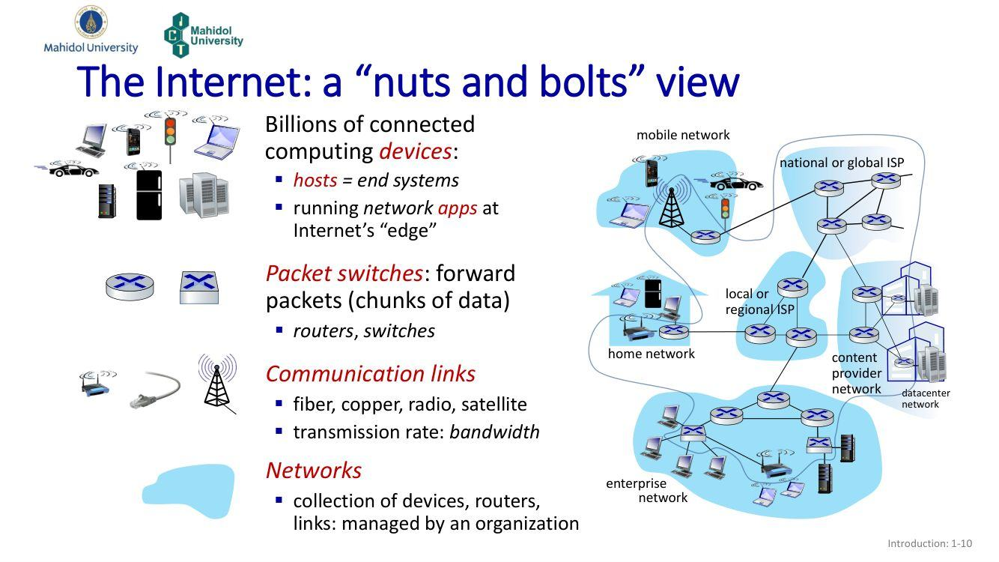
1.2 มุมมอง "Services" (บริการ)
- อินเทอร์เน็ตคือ โครงสร้างพื้นฐานที่ให้บริการแก่แอปพลิเคชัน เช่น Web, streaming, video conference, email, เกม, e-commerce, social media, เครื่องใช้ไฟฟ้าที่ต่อเน็ต
- ให้ programming interface แก่แอปแบบกระจาย — มี "hooks" ให้แอปเชื่อมต่อและใช้บริการ transport ของอินเทอร์เน็ต
- มีตัวเลือกบริการหลายแบบ คล้ายไปรษณีย์ (ส่งธรรมดา / ลงทะเบียน / ด่วน)
💡 สไลด์ภาษาไทยสรุปว่า: อินเทอร์เน็ตไม่ได้ถูกควบคุมจากศูนย์กลางเดียว แต่ขับเคลื่อนด้วย โปรโตคอลมาตรฐาน (TCP/IP) ที่ทำให้อุปกรณ์ต่างชนิดคุยกันได้
- Network Core = โครงข่าย router และสายสัญญาณระดับภูมิภาคที่เชื่อม ISP
- Network Edge = อุปกรณ์ปลายทาง (เซิร์ฟเวอร์ คอม สมาร์ทโฟน)
- Communication Links = ตัวกลาง (fiber, copper, radio) ที่ส่งข้อมูลเป็น packets
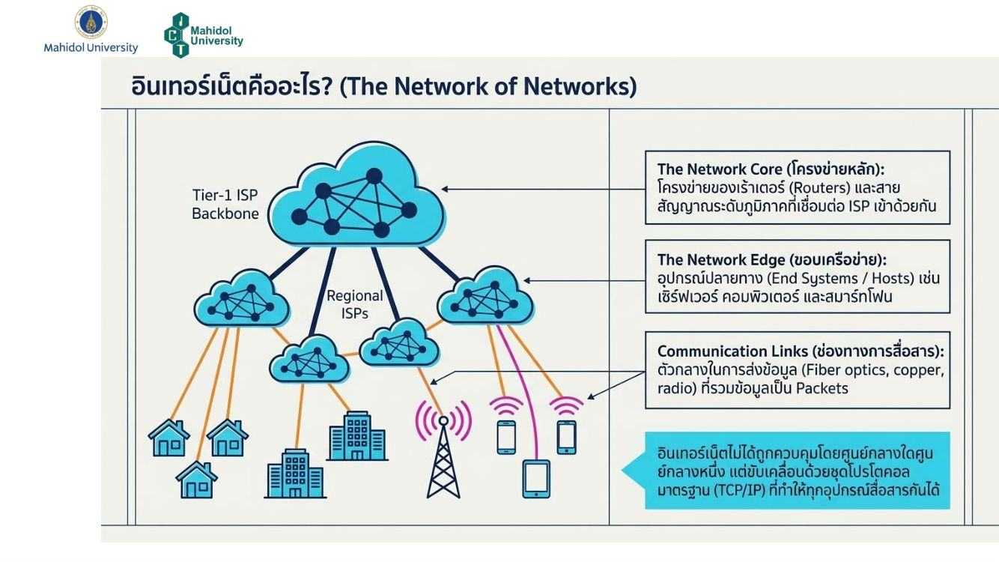
2. โปรโตคอล (Protocol) คืออะไร?
นิยาม: โปรโตคอลกำหนด รูปแบบ (format) และ ลำดับ (order) ของข้อความที่ส่ง-รับระหว่างอุปกรณ์ในเครือข่าย และ การกระทำ (actions) เมื่อส่งหรือได้รับข้อความ
จำ 3 อย่าง: Format – Order – Action
- Human protocol: "ขอถามเวลาหน่อย" / "มีคำถามครับ" / การแนะนำตัว — มีข้อความเฉพาะ และมีการตอบสนองเมื่อได้ยิน
- Network protocol: เหมือนกันแต่เป็นเครื่องคุยกับเครื่อง ทุกการสื่อสารบนอินเทอร์เน็ตถูกควบคุมด้วยโปรโตคอล
ตัวอย่างเทียบกัน:
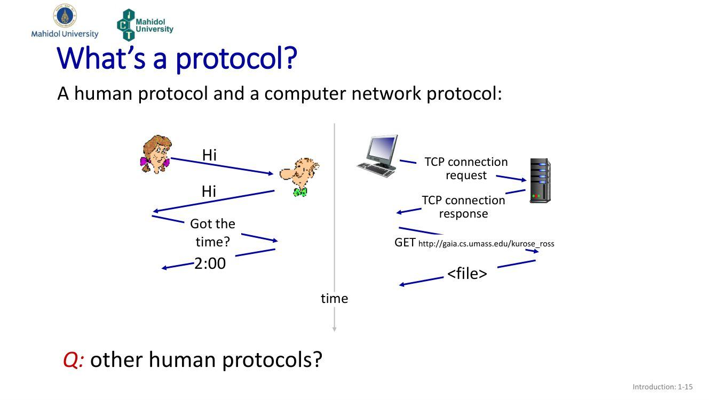
ซ้าย (คน): Hi → Hi → Got the time? → 2:00 / ขวา (คอม): TCP connection request → TCP connection response → GET http://gaia.cs.umass.edu/kurose_ross → <file>
💡 ถ้าอีกฝ่ายไม่ตอบ "Hi" กลับ คนก็ไม่ถามต่อ — เครื่องก็เหมือนกัน ถ้าไม่ได้ response ก็ไม่ส่ง GET
3. Network Edge (ขอบเครือข่าย)
3.1 โครงสร้างของอินเทอร์เน็ตแบบละเอียดขึ้น
| ส่วน | ประกอบด้วย |
|---|---|
| Network edge | hosts แบ่งเป็น clients และ servers (servers มักอยู่ใน data center) |
| Access networks, physical media | ลิงก์สื่อสารแบบมีสายและไร้สาย ที่ต่อ host เข้ากับ router ตัวแรก |
| Network core | router ที่เชื่อมถึงกัน = network of networks |
3.2 Access Networks — ต่อ end system เข้า edge router อย่างไร?
มี 3 กลุ่ม: residential (บ้าน), institutional (โรงเรียน บริษัท), mobile (WiFi, 4G/5G)
(ก) Cable-based access (HFC)
- ใช้ระบบ cable TV เดิม ส่ง data และ TV ที่ ความถี่ต่างกัน บนสายเส้นเดียวกัน
- ใช้ FDM (Frequency Division Multiplexing) = แบ่งช่องสัญญาณตามย่านความถี่ (ช่อง video, data, control)
- HFC = Hybrid Fiber Coax (ผสมไฟเบอร์กับสาย coax)
- Asymmetric (ขาลงเร็วกว่าขาขึ้น): downstream 40 Mbps – 1.2 Gbps, upstream 30–100 Mbps
- บ้านหลายหลัง แชร์ เครือข่ายไปยัง cable headend
- อุปกรณ์: cable modem, splitter → cable headend → CMTS (cable modem termination system) → ISP
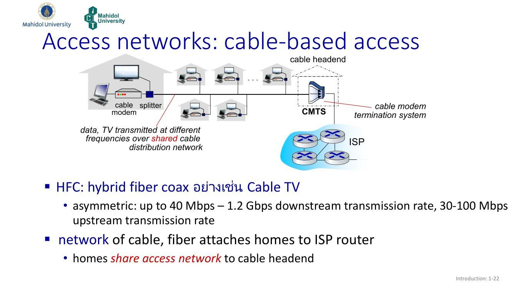
(ข) DSL (Digital Subscriber Line)
- ใช้ สายโทรศัพท์เดิม ไปยัง central office (ชุมสาย) → DSLAM (DSL access multiplexer)
- voice กับ data ส่งที่ความถี่ต่างกัน: data → Internet, voice → เครือข่ายโทรศัพท์
- เป็นสาย dedicated (ไม่แชร์) downstream 24–52 Mbps, upstream 3.5–16 Mbps
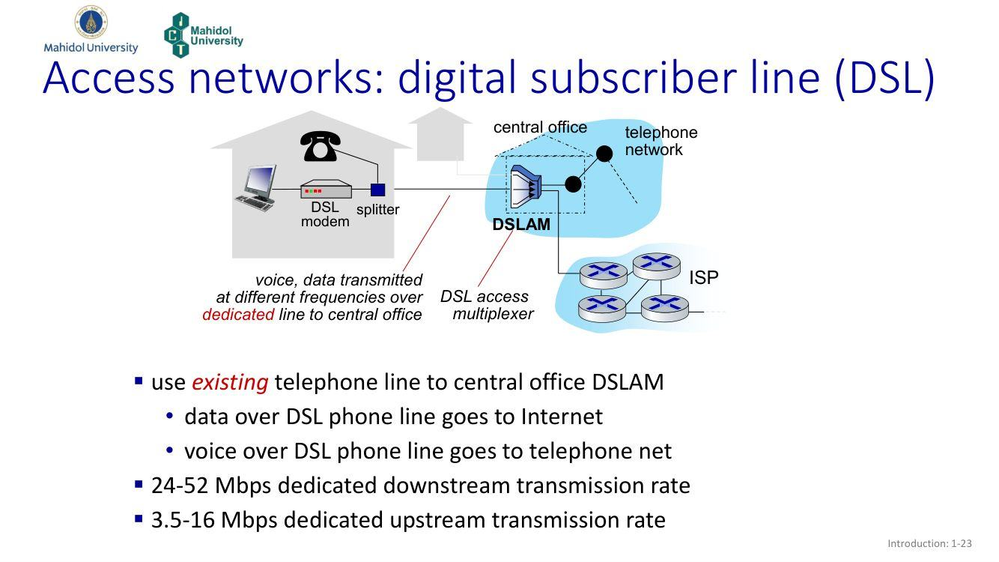
⚠️ Cable = shared / DSL = dedicated — ออกสอบบ่อย
(ค) Home networks
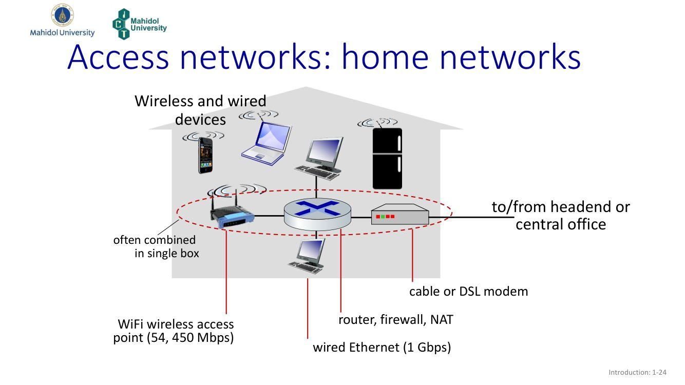
อุปกรณ์มีสาย/ไร้สาย → WiFi AP (54, 450 Mbps) หรือ wired Ethernet (1 Gbps) → router + firewall + NAT → cable/DSL modem → headend หรือ central office
- router, AP, modem มักรวมอยู่ใน กล่องเดียว
(ง) Wireless access networks
เชื่อม end system กับ router ผ่าน base station = access point
| ประเภท | ระยะ | ความเร็ว |
|---|---|---|
| WLAN (802.11b/g/n = WiFi) | ในหรือรอบตึก ~100 ft | 11, 54, 450 Mbps |
| Wide-area cellular (4G/5G) โดยผู้ให้บริการมือถือ | สิบ ๆ km | สิบ ๆ Mbps |
(จ) Enterprise networks (บริษัท มหาวิทยาลัย)
- ผสมทั้งมีสายและไร้สาย ต่อ switch และ router หลายตัว
- Ethernet: 100 Mbps, 1 Gbps, 10 Gbps / WiFi: 11, 54, 450 Mbps
- มี institutional router ต่อไป ISP, มี mail/web server ขององค์กร
(ฉ) Data center networks
- ลิงก์ bandwidth สูงมาก (10s–100s Gbps) เชื่อมเซิร์ฟเวอร์หลักร้อยถึงหลักพันเครื่องเข้าด้วยกันและเข้าอินเทอร์เน็ต
ตารางสรุป (จากสไลด์ภาษาไทย):
| เทคโนโลยี | ตัวกลาง | แบนด์วิดท์ | ความเร็ว |
|---|---|---|---|
| FTTH (Fiber to the Home) | ใยแก้วนำแสง (แสง) | ส่วนตัว (dedicated) | สูงมาก |
| Cable (HFC) | coax (ทองแดง/แสง) | แชร์ (shared) | ไม่สม่ำเสมอ (ดาวน์โหลดเร็วกว่าอัปโหลด) |
| DSL | สายโทรศัพท์ (ทองแดง) | ส่วนตัว | จำกัดตามระยะทางจากชุมสาย |
| 5G / Wireless | คลื่นวิทยุ | แชร์ | เน้นความคล่องตัว (mobility) |
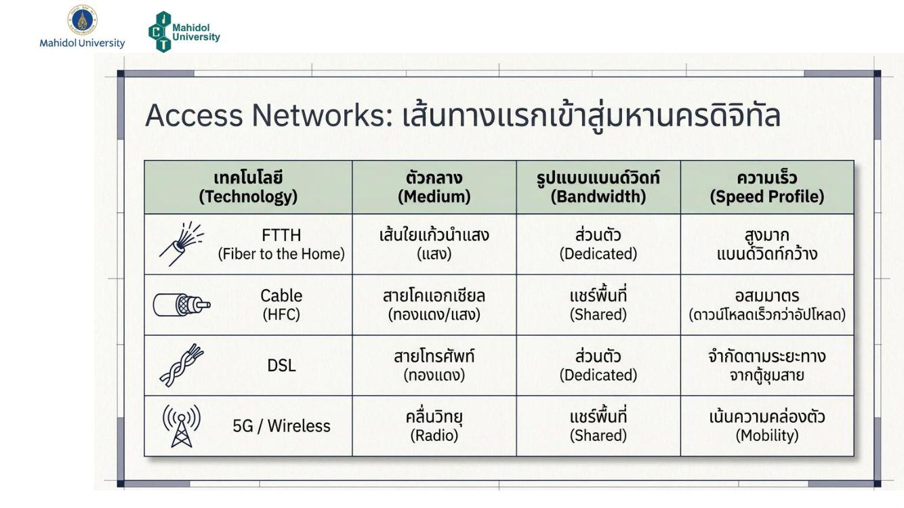
3.3 Host ส่งข้อมูลอย่างไร
- รับ application message
- หั่นเป็นก้อนเล็ก ๆ เรียกว่า packets ยาว L bits
- ส่งเข้า access network ด้วยอัตรา R (bps) — R เรียกว่า link transmission rate / link capacity / link bandwidth
Packet transmission delay = เวลาที่ใช้ "ดัน" แพ็กเก็ต L บิตออกไปบนลิงก์
$$d_{trans} = \frac{L\ (\text{bits})}{R\ (\text{bits/sec})}$$
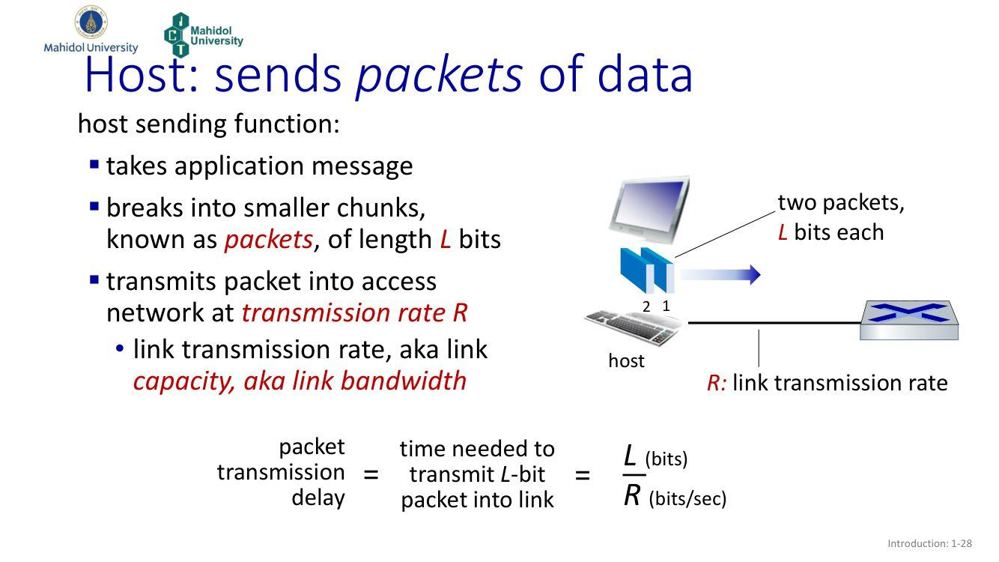
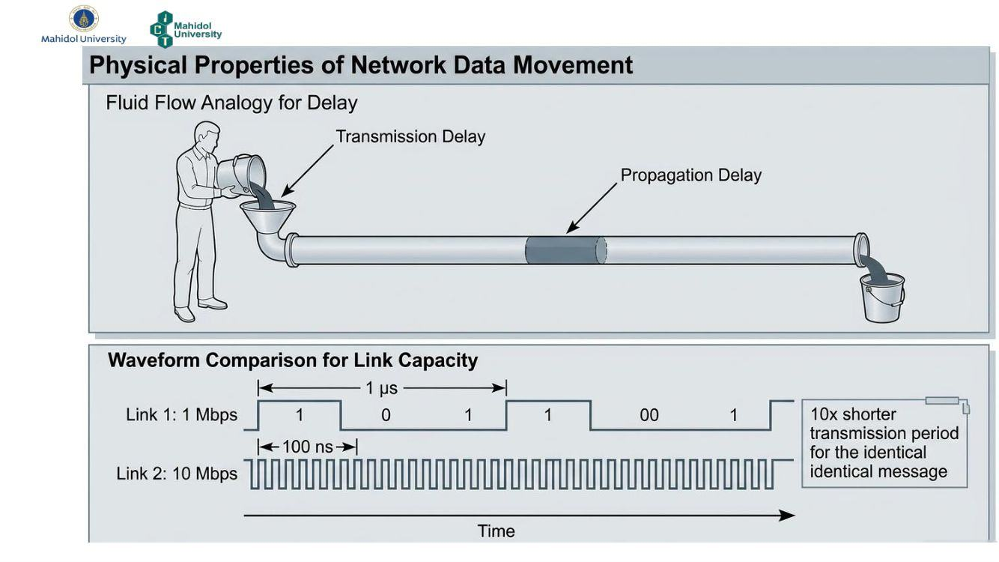
💡 สไลด์ภาพ "Waveform": ลิงก์ 1 Mbps ใช้ 1 µs ต่อบิต, ลิงก์ 10 Mbps ใช้ 100 ns ต่อบิต → ข้อความเดียวกันส่งเสร็จเร็วกว่า 10 เท่า (bandwidth สูง = บิตสั้นลง ไม่ใช่วิ่งเร็วขึ้น)
3.4 Physical Media (สื่อกลางทางกายภาพ)
- bit เดินทางระหว่างคู่ transmitter/receiver
- physical link = สิ่งที่อยู่ระหว่างผู้ส่งกับผู้รับ
- Guided media = สัญญาณวิ่งในสื่อของแข็ง: copper, fiber, coax
- Unguided media = สัญญาณกระจายอิสระ เช่น radio
| สื่อ | ลักษณะ | จุดเด่น/ตัวเลข |
|---|---|---|
| Twisted pair (TP) | สายทองแดงหุ้มฉนวน 2 เส้นบิดเกลียว | Cat 5: 100 Mbps, 1 Gbps Ethernet / Cat 6: 10 Gbps |
| Coaxial cable | ตัวนำทองแดง 2 ชั้น มีจุดศูนย์กลางร่วมกัน (co-axial = แกนร่วม) | bidirectional, broadband = หลายช่องความถี่บนสายเดียว, หลายร้อย Mbps ต่อช่อง ใช้ใน cable internet, กล้องวงจรปิด |
| Fiber optic | ใยแก้วส่ง พัลส์แสง แต่ละพัลส์ = 1 บิต | เร็วมาก point-to-point 10s–100s Gbps, error ต่ำ, repeater วางห่างกันได้, ไม่ถูกรบกวนจากคลื่นแม่เหล็กไฟฟ้า |
| Wireless radio | สัญญาณในย่าน "bands" ของสเปกตรัม ไม่มีสาย | broadcast, half-duplex, ได้รับผลจาก reflection, obstruction, interference/noise |
ประเภท radio link:
| ประเภท | ความเร็ว / ระยะ |
|---|---|
| Wireless LAN (WiFi) | 10–100s Mbps, สิบ ๆ เมตร |
| Wide-area (4G/5G) | สิบ ๆ Mbps (4G) ระยะ ~10 km |
| Bluetooth | ทดแทนสาย ระยะสั้น ความเร็วจำกัด |
| Terrestrial microwave | point-to-point ช่องละ 45 Mbps |
| Satellite | downlink < 100 Mbps (Starlink), delay 270 ms end-to-end (แบบ geostationary) |
4. Network Core (แกนกลางเครือข่าย)
Network core = mesh ของ router ที่ต่อถึงกัน ใช้ packet switching: host หั่นข้อความเป็นแพ็กเก็ต แล้วเครือข่ายส่งต่อแพ็กเก็ตจาก router หนึ่งไปอีกตัวตามเส้นทางจนถึงปลายทาง
4.1 สองหน้าที่หลักของ core: Forwarding vs Routing
| Forwarding (aka switching) | Routing | |
|---|---|---|
| ขอบเขต | Local — ทำที่ router ตัวเดียว | Global — ทั้งเครือข่าย |
| ทำอะไร | ย้ายแพ็กเก็ตจาก input link ไป output link ที่ถูกต้อง | หาเส้นทางจากต้นทางถึงปลายทาง |
| ใช้อะไร | ดู destination address ใน header → เปิด local forwarding table | routing algorithms (ซึ่งเป็นตัวสร้าง forwarding table) |
ตัวอย่าง forwarding table:
| header value | output link |
|---|---|
| 0100 | 3 |
| 0101 | 2 |
| 0111 | 2 |
| 1001 | 1 |
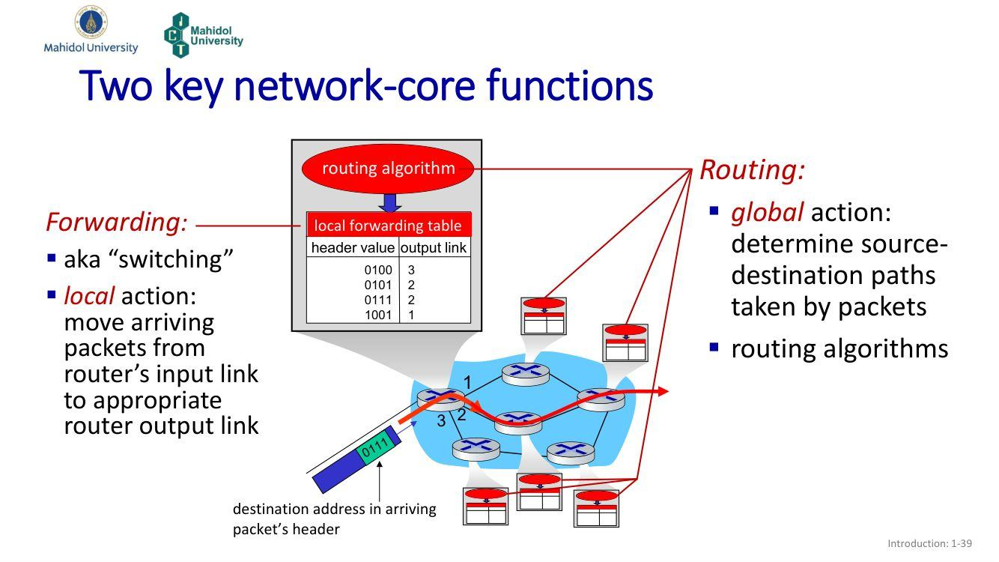
💡 เปรียบเทียบ: Routing = วางแผนเส้นทางทั้งทริปด้วย Google Maps / Forwarding = ตอนถึงแยกหนึ่ง ดูป้ายแล้วเลี้ยวซ้ายหรือขวา
4.2 Packet switching: Store-and-forward
- ส่งแพ็กเก็ต L บิตบนลิงก์ R bps ใช้เวลา L/R วินาที
- Store and forward: router ต้องได้รับแพ็กเก็ต ครบทั้งก้อน ก่อน จึงจะส่งต่อไปลิงก์ถัดไปได้
ตัวอย่าง one-hop: L = 10 Kbits, R = 100 Mbps → d = 10,000 / 100,000,000 = 10⁻⁴ s = 0.1 msec
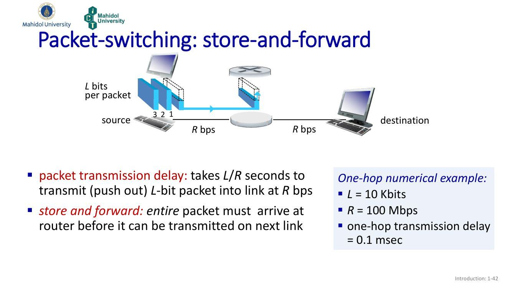
4.3 Packet switching: Queueing และ Loss
- Queueing เกิดเมื่องานเข้ามา เร็วกว่า ที่ให้บริการได้ (เช่น A, B ส่งมาที่ 100 Mb/s แต่ลิงก์ขาออกไป D, E มีแค่ 1.5 Mb/s)
- ถ้า arrival rate > transmission rate ของลิงก์เป็นช่วงเวลาหนึ่ง:
- แพ็กเก็ตจะ ต่อคิว รอส่งบน output link
- ถ้า buffer (หน่วยความจำ) ของ router เต็ม → แพ็กเก็ตถูก drop (สูญหาย)
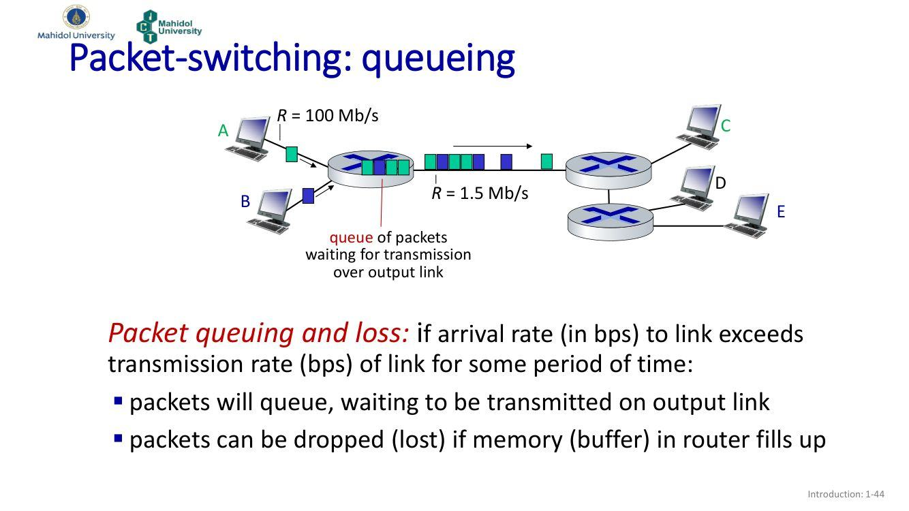
4.4 Circuit switching (ทางเลือกแทน packet switching)
- จองทรัพยากรตลอดเส้นทาง ไว้ให้ "call" ระหว่างต้นทาง-ปลายทาง
- ตัวอย่างในภาพ: แต่ละลิงก์มี 4 circuits, call ได้ circuit ที่ 2 ของลิงก์บน และ circuit ที่ 1 ของลิงก์ขวา
- Dedicated resources — ไม่แชร์ → ประสิทธิภาพ รับประกัน (circuit-like)
- ถ้าไม่มีการส่งข้อมูล circuit นั้น ว่างเปล่า (idle) เสียเปล่า คนอื่นใช้ไม่ได้
- ใช้ใน เครือข่ายโทรศัพท์แบบดั้งเดิม
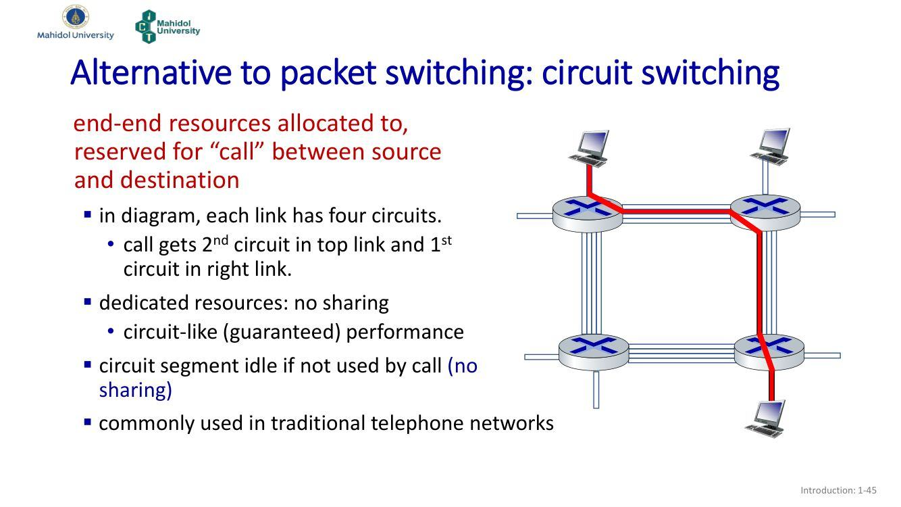
FDM vs TDM (วิธีแบ่ง circuit)
| FDM (Frequency Division Multiplexing) | TDM (Time Division Multiplexing) | |
|---|---|---|
| แบ่งอะไร | แบ่ง ความถี่ เป็นแถบแคบ ๆ | แบ่ง เวลา เป็นช่อง (slot) |
| ผู้ใช้ได้อะไร | ได้ band ของตัวเอง ส่งได้ตลอดเวลา ที่ความเร็วสูงสุดของ band แคบนั้น | ได้ slot เป็นระยะ ส่งได้ที่ความเร็วของ band กว้างทั้งหมด แต่เฉพาะช่วง slot ตัวเอง |
| เปรียบเทียบ | ถนนแบ่งเลน แต่ละคนมีเลนตัวเอง | ถนนเลนเดียวผลัดกันวิ่งตามคิวเวลา |
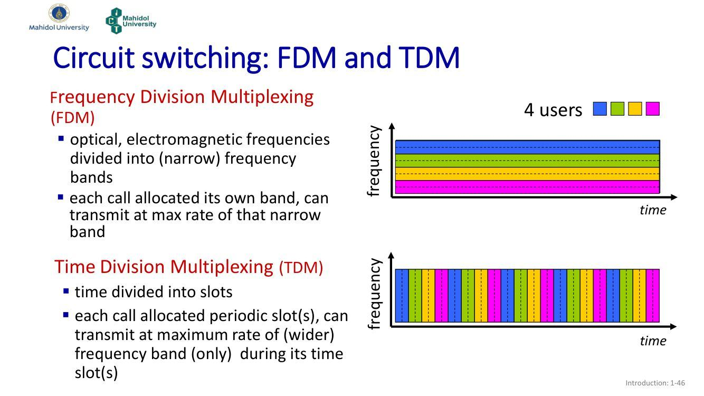
4.5 Packet switching vs Circuit switching
ตัวอย่างคำนวณ: ลิงก์ 1 Gb/s, ผู้ใช้แต่ละคนใช้ 100 Mb/s ตอน active และ active แค่ 10% ของเวลา
- Circuit switching: 1 Gb / 100 Mb = 10 users (ต้องจองเต็มให้ทุกคน)
- Packet switching: รองรับ 35 users ได้ โดยโอกาสที่มีคน active พร้อมกันเกิน 10 คน < 0.0004 (ได้จากการแจกแจงทวินาม — สไลด์บอกเป็นการบ้านสำหรับคนเรียนความน่าจะเป็น)
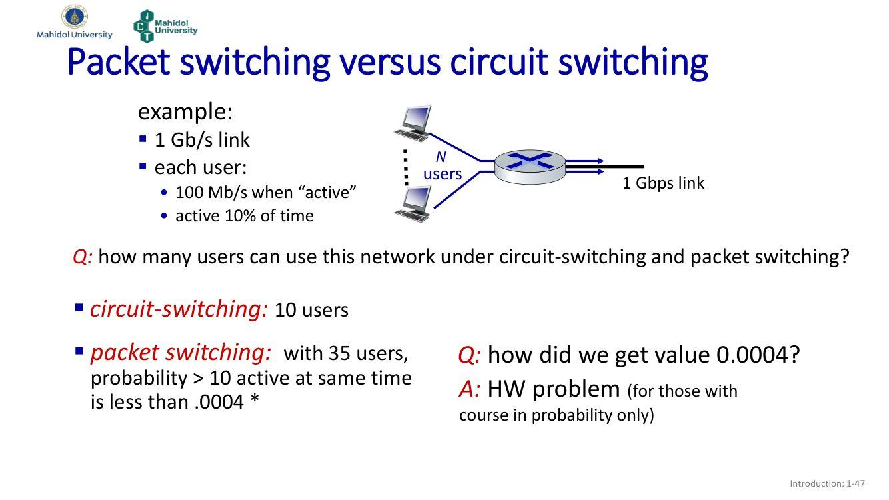
Packet switching เป็น "ผู้ชนะขาด" ไหม?
| ข้อดี | ข้อเสีย |
|---|---|
| เหมาะกับข้อมูลแบบ bursty (บางช่วงส่งเยอะ บางช่วงไม่ส่ง) | อาจเกิด congestion รุนแรง → delay และ loss จาก buffer overflow |
| แชร์ทรัพยากร ได้คุ้มค่า | ต้องมีโปรโตคอลช่วยเรื่อง reliable data transfer และ congestion control |
| ง่ายกว่า ไม่ต้อง call setup | ทำให้เหมือน circuit (รับประกันคุณภาพ) ได้ยาก — "It's complicated" จะเรียนเทคนิคต่อไป |
💡 เปรียบเทียบกับชีวิตจริง (สไลด์ไทย): Circuit switching = จองโต๊ะร้านอาหาร (Reserved) ถ้าไม่มาโต๊ะก็ว่างเสียเปล่า / Packet switching = ทางด่วนที่รถทุกคันแชร์กัน ใช้ทรัพยากรเต็มประสิทธิภาพ แต่ถ้ารถมาพร้อมกันเยอะก็ รถติด (queueing delay)
สไลด์ภาพ "Blueprint": Dedicated links = ถนนแยกของแต่ละเมือง ใช้ไม่เต็มที่ (wasted capacity) / Multiplexing = ถนนรวม ใช้ประโยชน์สูง แต่มีความเสี่ยงชนกัน (collision) — และการต่อทุกจุดถึงกันหมด (fully interconnected) มีขีดจำกัด จึงนำไปสู่การประมวลผลแบบกระจาย (centralized → decentralized → distributed)
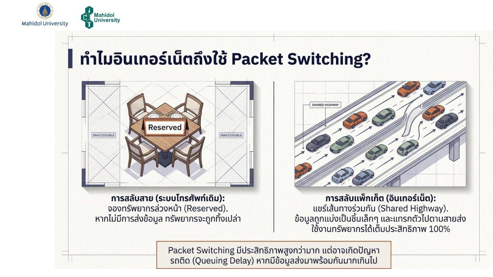
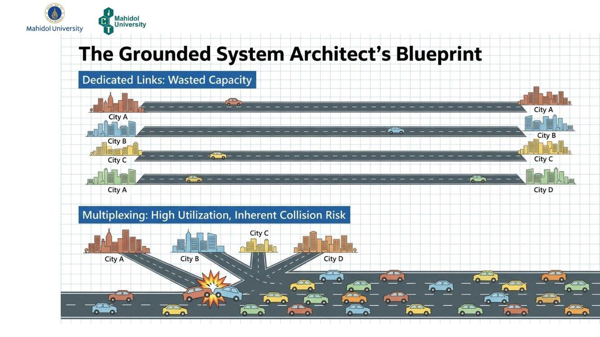
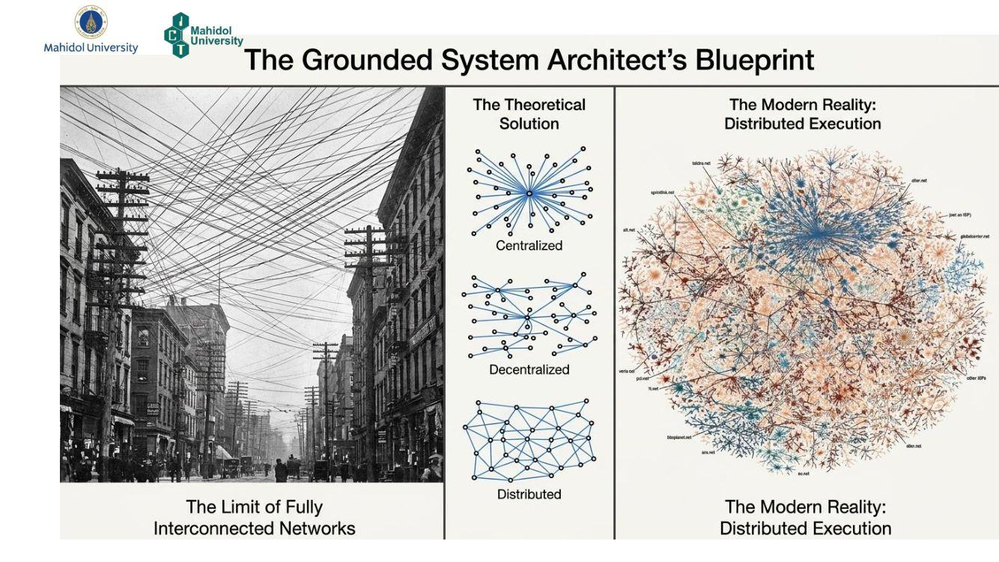
4.6 โครงสร้างอินเทอร์เน็ต: "Network of Networks"
host ต่อเน็ตผ่าน access ISP และ access ISP ต้องเชื่อมถึงกัน เพื่อให้ host สองเครื่องใดก็ได้ส่งแพ็กเก็ตหากันได้ โครงสร้างที่ได้ซับซ้อนมาก และถูกขับเคลื่อนด้วย เศรษฐศาสตร์และนโยบายประเทศ
สไลด์อธิบายแบบทีละขั้น (ตอบคำถาม "มี access ISP เป็นล้าน จะต่อกันยังไง?"):
- ต่อทุก access ISP ถึงกันตรง ๆ → ไม่ scale ต้องใช้ O(N²) การเชื่อมต่อ ❌
- ต่อทุกตัวเข้ากับ global transit ISP ตัวเดียว → customer กับ provider ISP มี ข้อตกลงทางเศรษฐกิจ (จ่ายเงิน)
- ถ้า global ISP ทำกำไรได้ ก็จะมี คู่แข่ง (ISP A, B, C)...
- ...ที่ต้องเชื่อมต่อกันเอง ผ่าน peering link และ IXP (Internet Exchange Point)
- ...อาจเกิด regional ISP มาเชื่อม access net เข้ากับ ISP ใหญ่
- ...และ content provider networks (Google, Microsoft, Akamai) สร้างเครือข่ายตัวเอง เพื่อนำบริการ/เนื้อหาไปใกล้ผู้ใช้
ที่ "ศูนย์กลาง" มีเครือข่ายใหญ่ไม่กี่เจ้า:
- Tier-1 commercial ISPs (Level 3, Sprint, AT&T, NTT) ครอบคลุมระดับประเทศและนานาชาติ
- Content provider networks (Google, Facebook) = เครือข่ายส่วนตัวต่อ data center เข้าอินเทอร์เน็ต มัก bypass tier-1 และ regional ISP
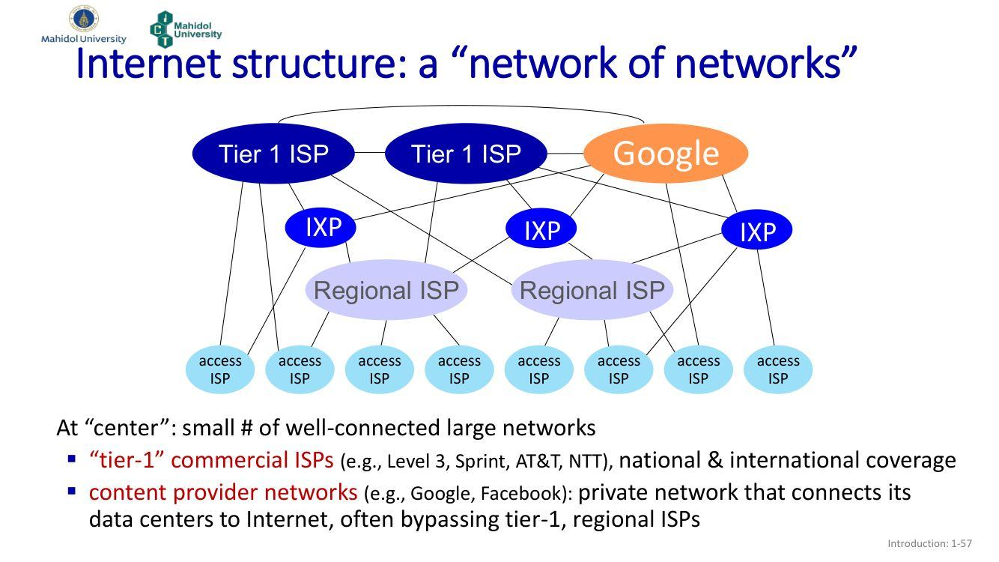
ลำดับชั้น ISP (สไลด์ไทย — ISP Hierarchy):
| ระดับ | ลักษณะ |
|---|---|
| Tier 1 ISPs | ผู้ให้บริการระดับโลก (AT&T, Sprint) มีเครือข่ายเส้นใยแก้วข้ามทวีป เชื่อมต่อกันเองโดย ไม่คิดค่าบริการ (settlement-free) |
| Regional ISPs | ระดับภูมิภาค/ประเทศ ทำหน้าที่เชื่อมเครือข่ายท้องถิ่นเข้ากับ Tier 1 |
| Access ISPs | ระดับท้องถิ่น (บ้าน องค์กร) |
- เงินไหล (money flow) จากชั้นล่างขึ้นชั้นบน (ลูกค้าจ่าย provider) ข้อมูลไหลทั้งสองทาง
- POP (Point of Presence): จุดที่ลูกค้าหรือ ISP ย่อยนำเราเตอร์มาเชื่อมกับเครือข่ายของ ISP รายใหญ่
- IXP (Internet Exchange Point): อาคารศูนย์กลางที่ผู้ให้บริการหลายรายมาเชื่อมต่อกัน
- Peering ผ่าน IXP: แลกข้อมูลกันโดยตรง → ลด latency และ ประหยัดค่าใช้จ่าย ไม่ต้องจ่ายให้ Tier-1
- Content Provider Network: ยักษ์ใหญ่ (Google, Microsoft) สร้าง private network ทั่วโลก ข้ามลำดับชั้น (bypass) โดยวางเซิร์ฟเวอร์ใกล้ผู้ใช้ (ผ่าน IXP หรือ access ISP ตรง) → คุมคุณภาพได้ 100%, ลดต้นทุนการส่ง, ให้บริการ YouTube/Search ได้เร็ว
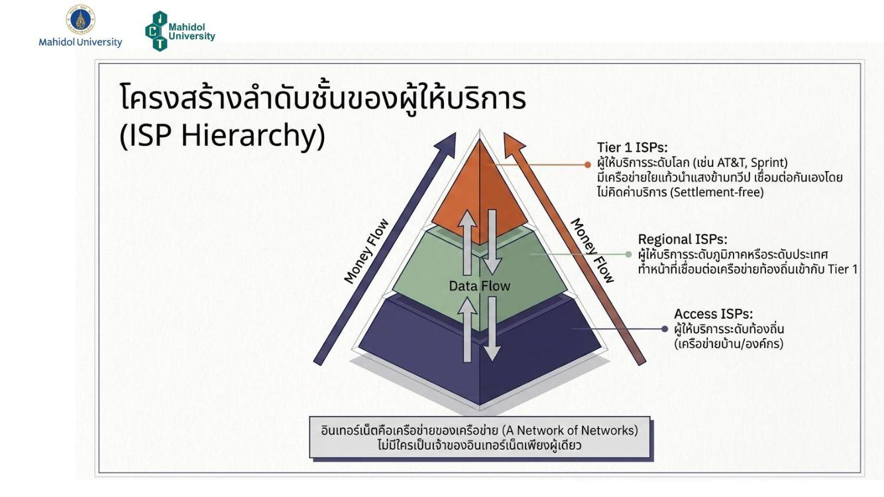
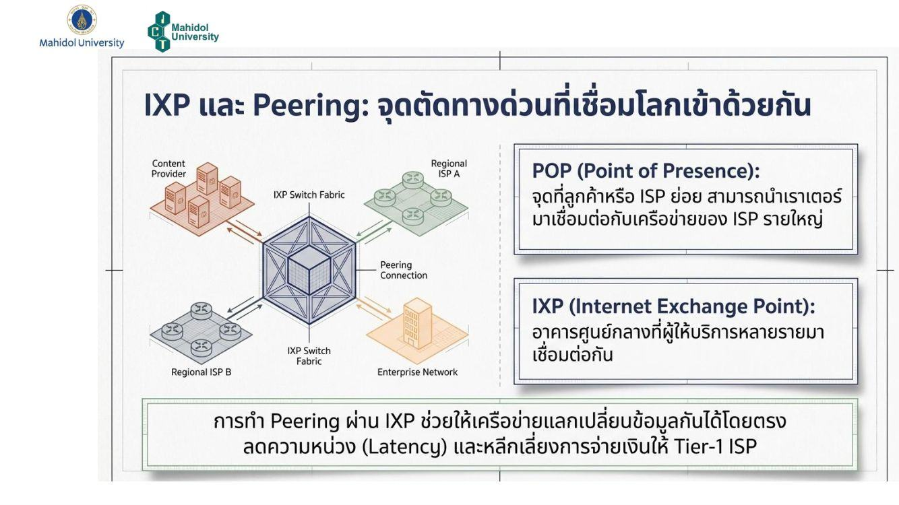
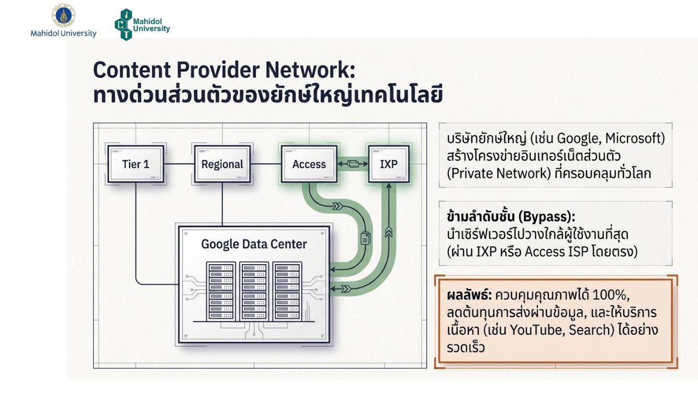
💡 เปรียบ ISP กับระบบถนน: Access ISP = ซอยหน้าบ้าน, Regional = ถนนสายหลักในจังหวัด, Tier-1 = ทางหลวงข้ามประเทศ, IXP = ทางแยกต่างระดับที่หลายถนนมาเจอกัน, Content provider = ทางด่วนส่วนตัวของบริษัทใหญ่
ภาพสรุปการเดินทางของ 1 แพ็กเก็ต (สไลด์ไทย):
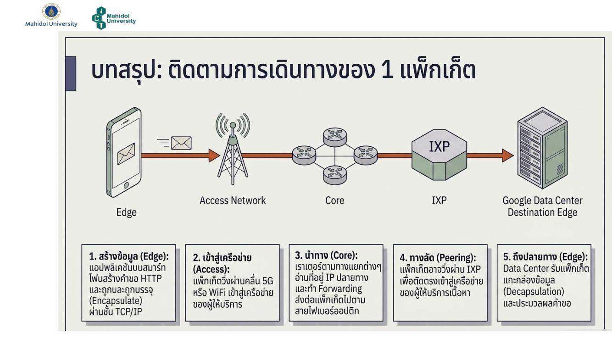
- สร้างข้อมูล (Edge): แอปสร้างคำขอ HTTP และห่อหุ้ม (encapsulate) ผ่าน TCP/IP
- เข้าสู่เครือข่าย (Access): แพ็กเก็ตวิ่งผ่าน 5G หรือ WiFi เข้าเครือข่ายของ ISP
- นำส่ง (Core): router ตรวจ IP ปลายทาง แล้ว forwarding ส่งต่อบนสายไฟเบอร์ความเร็วสูง
- ทางลัด (Peering): ผ่าน IXP ตัดตรงเข้าเครือข่ายผู้ให้บริการเนื้อหา
- ถึงปลายทาง (Edge): data center รับแพ็กเก็ต แกะกล่อง (decapsulation) และประมวลผล
The Invisible Infrastructure (3 หลักคิด):
- Intelligence is at the Edge — ความฉลาดและความซับซ้อนอยู่ที่ปลายทาง (อุปกรณ์ผู้ใช้) แกนกลางมีหน้าที่แค่ส่งให้เร็วที่สุด
- Network of Networks — ระบบกระจายศูนย์ ไม่มีใครคุมเบ็ดเสร็จ แต่เชื่อมกันด้วยข้อตกลงทางธุรกิจและ IXP
- The Spanning Layer (IP) — IP เรียบง่าย เป็นกาวที่ผสานฮาร์ดแวร์ทุกยุค รองรับนวัตกรรมในอนาคตได้ไม่จำกัด
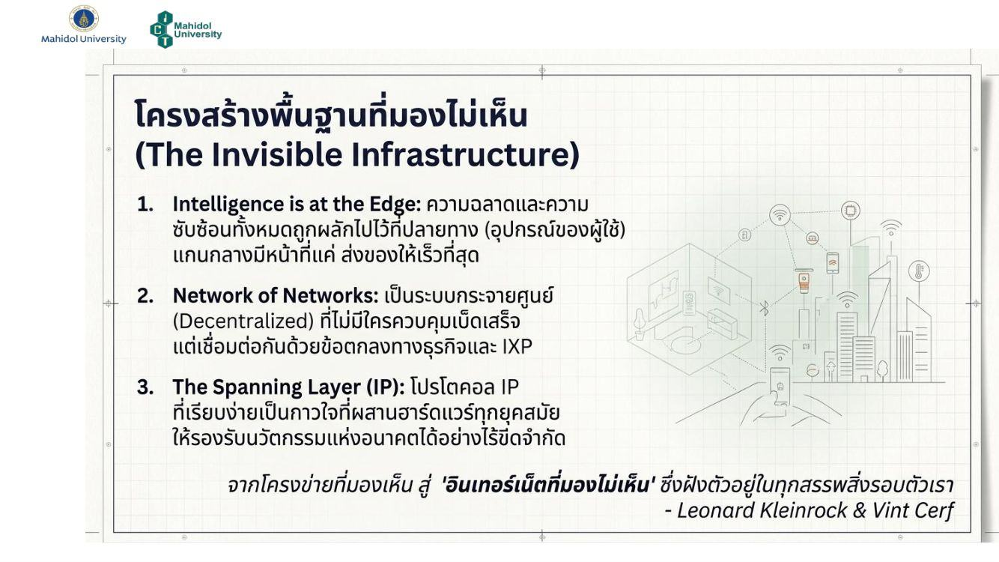
5. Performance: Delay, Loss, Throughput
5.1 Delay และ Loss เกิดขึ้นได้อย่างไร?
- แพ็กเก็ต ต่อคิวใน buffer ของ router รอถึงตาส่ง
- คิวยาวขึ้นเมื่อ arrival rate ชั่วคราว เกิน capacity ของลิงก์ขาออก
- Loss เกิดเมื่อหน่วยความจำสำหรับคิวเต็ม — แพ็กเก็ตที่มาถึงตอนไม่มี free buffer ถูกทิ้ง
5.2 Packet delay: 4 แหล่ง ⭐
$$d_{nodal} = d_{proc} + d_{queue} + d_{trans} + d_{prop}$$
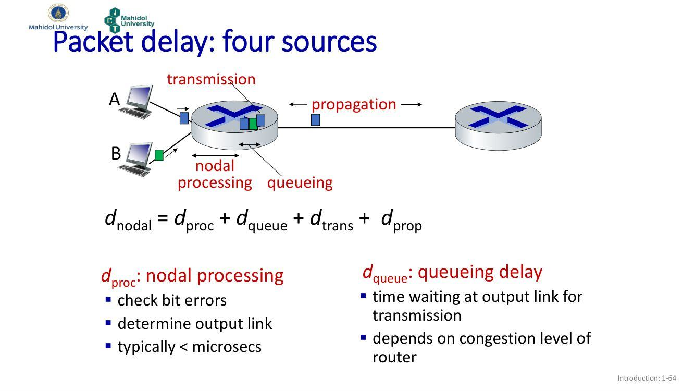
| ชนิด | คืออะไร | ขึ้นกับ | ขนาดโดยทั่วไป |
|---|---|---|---|
| d_proc (nodal processing) | ตรวจ bit errors, ตัดสินใจเลือก output link | ความเร็ว router | < microsecs |
| d_queue (queueing) | เวลารอที่ output link ก่อนได้ส่ง | ระดับ congestion ของ router | ไม่แน่นอน |
| d_trans (transmission) | เวลา "ดัน" ทุกบิตของแพ็กเก็ตขึ้นลิงก์ | d_trans = L/R (L = ความยาวแพ็กเก็ต bits, R = link rate bps) | |
| d_prop (propagation) | เวลาที่สัญญาณเดินทางจากต้นลิงก์ถึงปลายลิงก์ | d_prop = d/s (d = ความยาวสาย, s = ความเร็วสัญญาณ ≈ 2×10⁸ m/s) |
⚠️ d_trans กับ d_prop ต่างกันมาก!
- d_trans ขึ้นกับ ขนาดแพ็กเก็ตและ bandwidth ไม่เกี่ยวกับระยะทาง
- d_prop ขึ้นกับ ระยะทาง ไม่เกี่ยวกับขนาดแพ็กเก็ต
💡 เปรียบกับของเหลว (สไลด์ภาพ): ความเร็วที่เทน้ำลงกรวยเข้าท่อ = transmission delay / เวลาที่น้ำไหลจากต้นท่อถึงปลายท่อ = propagation delay
5.3 Caravan analogy (ขบวนรถ) ⭐
การจับคู่: รถ = bit, ขบวนรถ = packet, ด่านเก็บเงิน = link transmission (router)
กรณีที่ 1: ขบวนรถ 10 คัน, ด่านใช้ 12 วินาที/คัน, รถวิ่ง 100 km/hr, ด่านห่างกัน 100 km ถาม: นานเท่าไหร่กว่าขบวนจะเรียงแถวหน้าด่านที่ 2?
- เวลาดันรถทั้งขบวนผ่านด่าน (≈ d_trans) = 12 × 10 = 120 s = 2 นาที
- เวลารถคันสุดท้ายวิ่งจากด่าน 1 ถึงด่าน 2 (≈ d_prop) = 100 km / 100 km/hr = 1 ชั่วโมง
- คำตอบ: 62 นาที
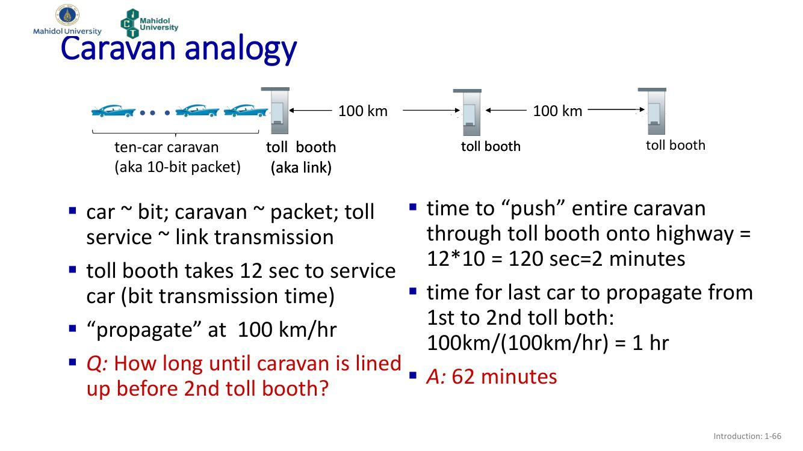
กรณีที่ 2: รถวิ่ง 1000 km/hr, ด่านใช้ 1 นาที/คัน ถาม: รถจะถึงด่าน 2 ก่อนที่ด่าน 1 บริการครบทุกคันไหม?
- ตอบ: ใช่! คันแรกออกจากด่านที่นาทีที่ 1 วิ่ง 100 km ใช้ 6 นาที → ถึงด่าน 2 ที่ นาทีที่ 7 ขณะนั้นยังเหลือ 3 คัน ที่ด่าน 1
- ความหมาย: บิตแรกของแพ็กเก็ตอาจไปถึง router ถัดไปแล้ว ขณะที่บิตหลัง ๆ ยังส่งไม่เสร็จ (เมื่อ d_trans ใหญ่กว่า d_prop)
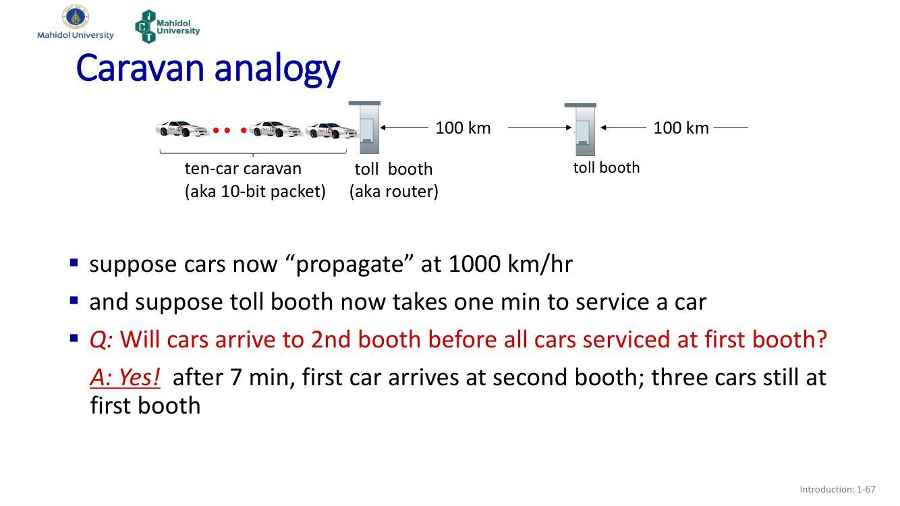
5.4 Queueing delay กับ Traffic intensity
- a = อัตราแพ็กเก็ตมาถึงเฉลี่ย (packets/s), L = ความยาวแพ็กเก็ต (bits), R = bandwidth (bps)
$$\text{traffic intensity} = \frac{L \cdot a}{R} = \frac{\text{arrival rate of bits}}{\text{service rate of bits}}$$
| ค่า La/R | ผลต่อ queueing delay เฉลี่ย |
|---|---|
| ≈ 0 | delay น้อย |
| → 1 | delay พุ่งสูงมาก (กราฟโค้งขึ้นชันเมื่อเข้าใกล้ 1) |
| > 1 | งานเข้ามามากกว่าที่ให้บริการได้ → delay เฉลี่ย อนันต์! |
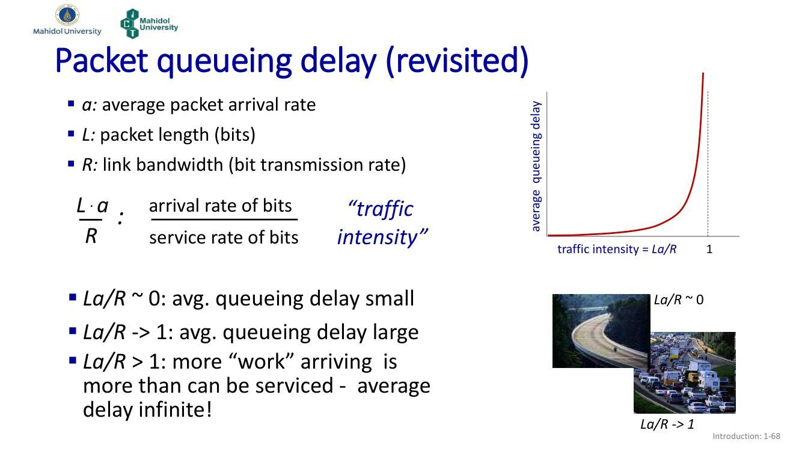
💡 เหมือนเคาน์เตอร์คิดเงิน: ถ้าลูกค้าเข้ามาเร็วเกือบเท่าที่แคชเชียร์คิดเงินไหว คิวก็ยาวมากแล้ว ถ้าเข้าเร็วกว่า คิวยาวไม่มีที่สิ้นสุด
5.5 Delay จริงบนอินเทอร์เน็ต: traceroute
traceroute วัด delay จากต้นทางไปยังแต่ละ router ตามเส้นทาง โดยสำหรับทุก i:
- ส่ง 3 แพ็กเก็ต ที่จะไปถึง router ที่ i (ตั้งค่า TTL = i)
- router ที่ i ส่งแพ็กเก็ตกลับมาหาผู้ส่ง
- ผู้ส่งวัดเวลาระหว่างส่งกับได้รับตอบ
ตัวอย่าง: gaia.cs.umass.edu → www.eurecom.fr (19 hops)
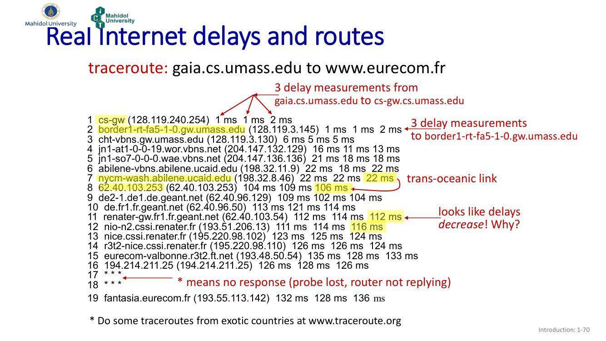
- hop 1–7 (ในอเมริกา): 1–22 ms
- hop 7 → 8: กระโดดจาก ~22 ms เป็น ~104 ms = trans-oceanic link (ข้ามมหาสมุทรแอตแลนติก ระยะทางไกล → d_prop มาก)
- hop 17, 18:
* * *= ไม่ตอบ (probe หาย หรือ router ไม่ตอบกลับ) - "ดูเหมือน delay ลดลง ทำไม?" (เช่น hop 4 = 16/11/13 ms บางค่ามากกว่า hop ถัด ๆ ไป) — เพราะแต่ละ probe เป็นแพ็กเก็ตแยกกันที่ส่งคนละเวลา เจอ queueing delay ไม่เท่ากัน ตามความหนาแน่นของคิวขณะนั้น
- ลองเล่นได้ที่ www.traceroute.org
5.6 Packet loss
- queue (buffer) หน้าลิงก์มี ความจุจำกัด
- แพ็กเก็ตที่มาถึงตอนคิวเต็ม → ถูก drop
- แพ็กเก็ตที่หายอาจถูก ส่งใหม่ โดย node ก่อนหน้า, โดย source end system, หรือไม่ส่งใหม่เลย (ขึ้นกับโปรโตคอล)
5.7 Throughput ⭐
throughput = อัตรา (bits/หน่วยเวลา) ที่บิตถูกส่งจากผู้ส่งไปถึงผู้รับ
- instantaneous = อัตรา ณ เวลาหนึ่ง
- average = อัตราเฉลี่ยในช่วงเวลายาว
ภาพ: server มีไฟล์ F bits ส่งผ่านท่อ Rs (ฝั่ง server) แล้วต่อท่อ Rc (ฝั่ง client) — เหมือนเทน้ำผ่านท่อ 2 ท่อต่อกัน
| กรณี | throughput เฉลี่ย end-to-end |
|---|---|
| Rs < Rc | Rs |
| Rs > Rc | Rc |
→ throughput = min(Rs, Rc) ลิงก์ที่ช้าที่สุดเรียกว่า bottleneck link (คอขวด)
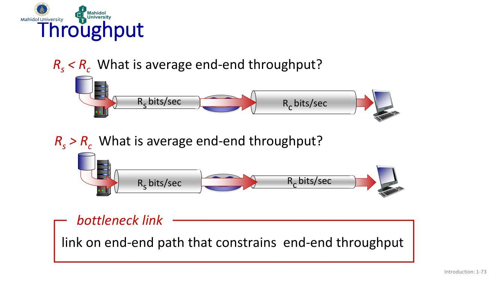
Network scenario: มี 10 connections แชร์ backbone link R bits/sec อย่างเท่าเทียม $$\text{per-connection throughput} = \min(R_c,\ R_s,\ R/10)$$
- ในทางปฏิบัติ Rc หรือ Rs (access link) มักเป็นคอขวด ไม่ใช่ backbone
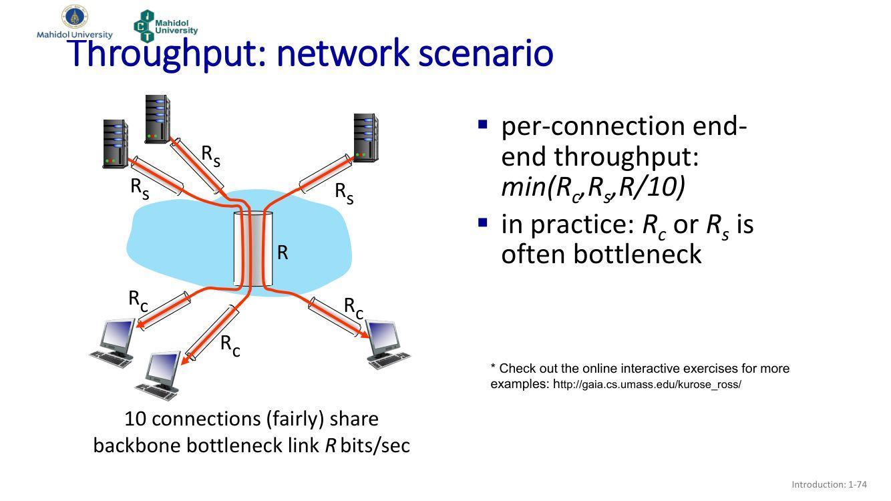
- แบบฝึกเพิ่ม: http://gaia.cs.umass.edu/kurose_ross/
💡 ท่อน้ำใหญ่แค่ไหน น้ำก็ไหลได้เท่าท่อที่เล็กที่สุดในสาย
6. Network Security
ทำไมต้องสนใจ? อินเทอร์เน็ตแต่แรก ไม่ได้ออกแบบมาเพื่อความปลอดภัย
- วิสัยทัศน์เดิม: "กลุ่มผู้ใช้ที่ไว้ใจกัน ต่อกับเครือข่ายโปร่งใส" ☺
- ผู้ออกแบบโปรโตคอลจึงต้อง "ไล่ตามแก้" (catch-up)
- ต้องคำนึงถึงความปลอดภัย ทุก layer
ต้องคิด 3 เรื่อง: คนร้ายโจมตีได้อย่างไร / ป้องกันอย่างไร / ออกแบบสถาปัตยกรรมให้ทนต่อการโจมตีอย่างไร
6.1 รูปแบบการโจมตี
| การโจมตี | อธิบาย |
|---|---|
| Packet sniffing (ดักจับแพ็กเก็ต) | บน broadcast media (shared Ethernet, wireless) network interface แบบ promiscuous อ่าน/บันทึกทุกแพ็กเก็ตที่ผ่าน (รวมถึงรหัสผ่าน!) เช่น C ดักอ่านแพ็กเก็ต src:B → dest:A — Wireshark ที่ใช้ใน lab ก็เป็น packet sniffer ฟรี |
| IP spoofing (ปลอม IP) | ใส่แพ็กเก็ตที่มี source address ปลอม — ผู้โจมตีสร้างแพ็กเก็ตโดยปลอม IP ผู้ส่งเป็นเครื่องอื่น เพื่อหลอกปลายทางว่ามาจากแหล่งที่น่าเชื่อถือ (C ส่งแพ็กเก็ตแต่อ้างว่า src:B) |
| DoS (Denial of Service) | ทำให้ทรัพยากร (server, bandwidth) ใช้งานไม่ได้สำหรับผู้ใช้จริง โดยถล่มด้วย traffic ปลอม ทำให้เสียหายหรือช้ามาก — มาจาก เครื่องเดียว/แหล่งเดียว |
| DDoS (Distributed DoS) | โจมตีจาก หลายเครื่องพร้อมกัน มักใช้เครื่องที่ติดมัลแวร์ (botnet) ทั่วโลก → รับมือยากกว่ามาก |
ขั้นตอน DDoS: 1) เลือกเป้าหมาย → 2) เจาะเข้าเครื่องต่าง ๆ ในเครือข่าย (สร้าง botnet) → 3) สั่งเครื่องที่ถูกยึดส่งแพ็กเก็ตถล่มเป้าหมาย
| Packet sniffing | IP spoofing | DoS / DDoS |
|---|---|---|
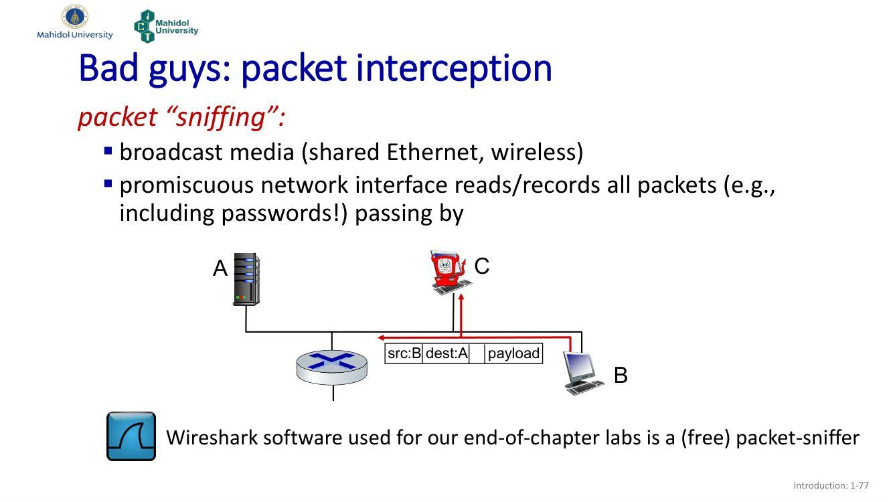 |
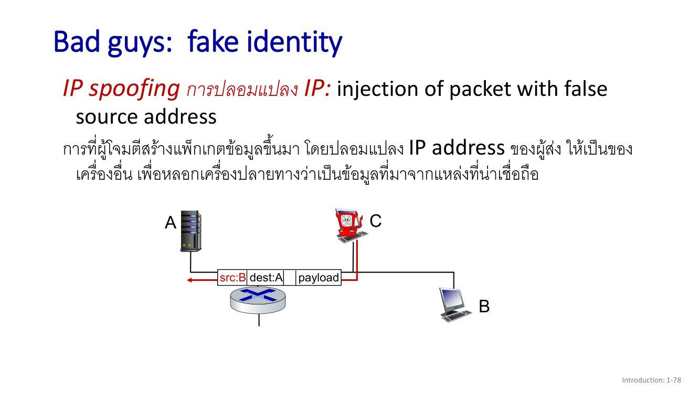 |
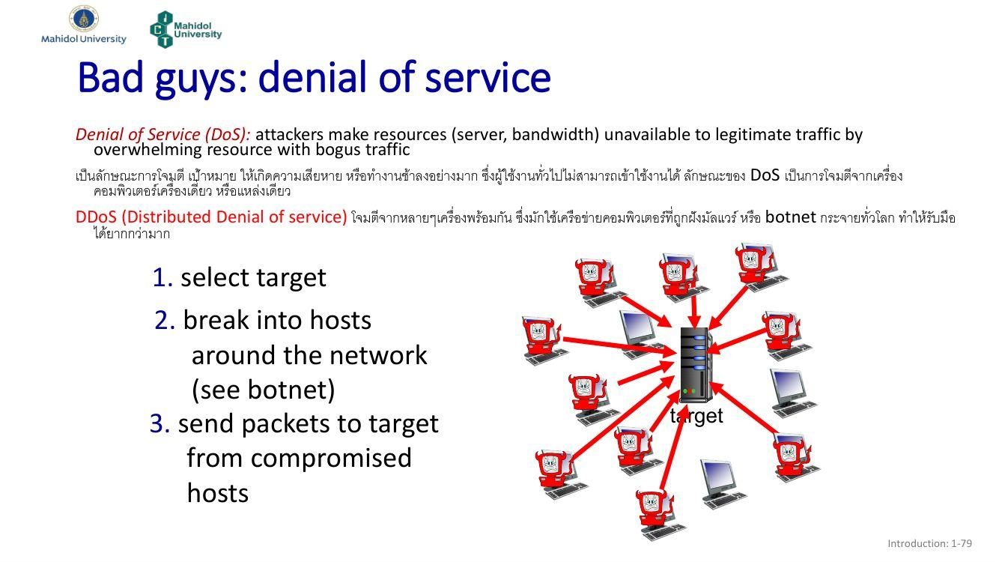 |
6.2 แนวป้องกัน (Lines of defense)
| วิธี | ทำอะไร |
|---|---|
| Authentication | พิสูจน์ว่าคุณเป็นคนที่อ้างจริง — เครือข่ายมือถือมี SIM card เป็น hardware identity แต่อินเทอร์เน็ตดั้งเดิมไม่มี |
| Confidentiality | เก็บความลับด้วย encryption |
| Integrity checks | digital signatures ป้องกัน/ตรวจจับการแก้ไขข้อมูล |
| Access restrictions | เช่น VPN ที่ต้องใช้รหัสผ่าน |
| Firewalls | "middlebox" ใน access และ core network: off-by-default กรองแพ็กเก็ตขาเข้าจำกัดผู้ส่ง ผู้รับ แอป / ตรวจจับและรับมือ DoS |
7. Protocol Layers และ Reference Models
7.1 ทำไมต้องแบ่ง layer?
เครือข่ายซับซ้อนมาก มีหลายชิ้น: hosts, routers, links หลายชนิด, applications, protocols, hardware, software — จะจัดโครงสร้าง (และการพูดถึง) ได้อย่างไร?
ตัวอย่าง: การเดินทางทางอากาศ
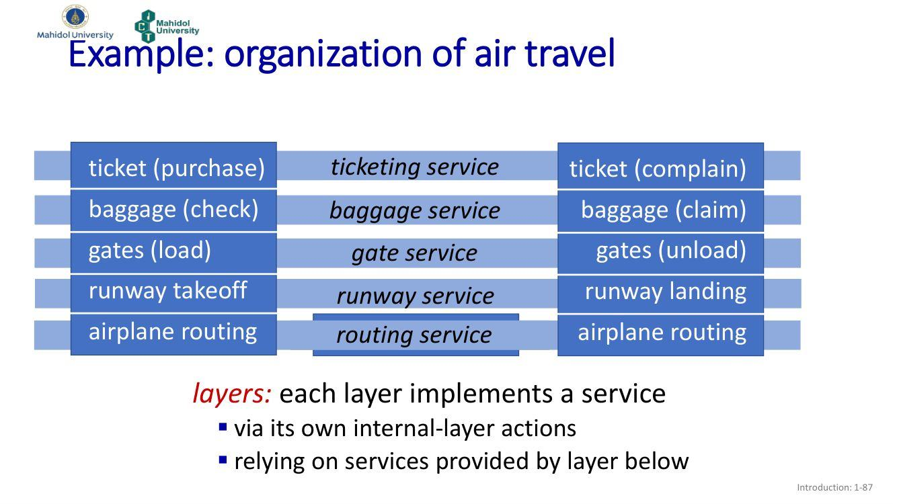
- ระบบทั้งหมด = การส่ง "คน + กระเป๋า" จากต้นทางถึงปลายทาง (end-to-end)
- แต่ละ layer ทำบริการหนึ่งอย่าง ผ่านการทำงานภายใน layer ตัวเอง และ พึ่งบริการของ layer ข้างล่าง
ข้อดีของ layering:
- โครงสร้างชัดเจน — ระบุชิ้นส่วนและความสัมพันธ์ได้ (ใช้เป็น reference model ในการพูดคุย)
- Modularization — ดูแลและอัปเดตง่าย เปลี่ยนวิธีทำงานภายใน layer หนึ่ง ไม่กระทบ ส่วนอื่น (เช่น เปลี่ยนขั้นตอนที่ gate ไม่กระทบการเช็คอินกระเป๋า)
7.2 Internet protocol stack (TCP/IP 5 layers) ⭐
| Layer | หน้าที่ | ตัวอย่างโปรโตคอล | หน่วยข้อมูล |
|---|---|---|---|
| 5. Application | รองรับแอปพลิเคชันเครือข่าย | HTTP, IMAP, SMTP, DNS | message |
| 4. Transport | ส่งข้อมูล process ↔ process | TCP, UDP | segment |
| 3. Network | หาเส้นทางส่ง datagram จาก ต้นทาง → ปลายทาง | IP, routing protocols | datagram |
| 2. Link | ส่งข้อมูลระหว่าง อุปกรณ์เพื่อนบ้าน (node-to-node) | Ethernet, 802.11 (WiFi), PPP | frame |
| 1. Physical | บิต "บนสาย" | — | bits |
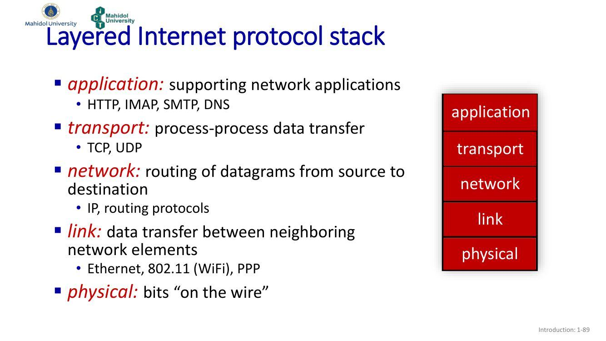
💡 จำลำดับจากบนลงล่าง: Application – Transport – Network – Link – Physical
⚠️ Transport = process-to-process, Network = host-to-host, Link = neighbor-to-neighbor (hop) — ต่างกันที่ขอบเขต
7.3 Encapsulation (การห่อหุ้มข้อมูล) ⭐
ขาส่ง แต่ละ layer เติม header ของตัวเองหน้าข้อมูลที่ได้จาก layer บน:
| Layer | สิ่งที่ได้ | ประกอบด้วย |
|---|---|---|
| Application | message | M |
| Transport | segment | Ht + M |
| Network | datagram | Hn + Ht + M |
| Link | frame | Hl + Hn + Ht + M |
| Physical | บิตบนสาย | — |
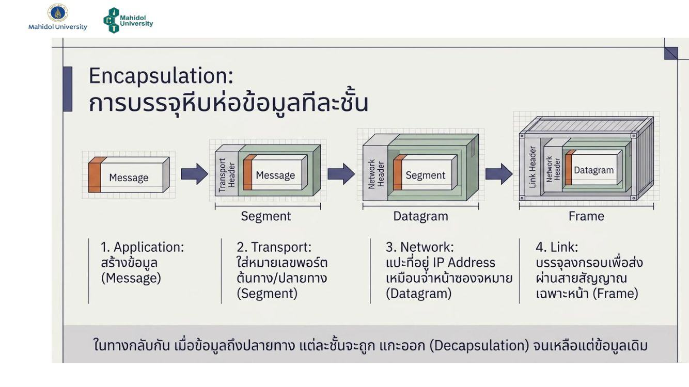
- Application แลก message (M) เพื่อทำบริการของแอป โดยใช้บริการของ transport
- Transport ห่อ M ด้วย header Ht → segment; Ht ใช้ทำบริการของ transport (เช่นส่งแบบเชื่อถือได้) จาก process หนึ่งไปอีก process โดยใช้บริการ network layer
- Network ห่อ segment [Ht|M] ด้วย Hn → datagram; ส่งจาก host หนึ่งไปอีก host โดยใช้บริการ link layer
- Link ห่อ datagram [Hn|[Ht|M]] ด้วย Hl → frame; ส่งจาก host ไปยังเพื่อนบ้านถัดไป
- ฝั่งรับทำกลับกัน = Decapsulation แกะ header ทีละชั้นจนเหลือข้อมูลเดิม
- 💡 เหมือน ตุ๊กตาแม่ลูกดก (Matryoshka) — message อยู่ในสุด segment → datagram → frame ห่อทับออกมา
Encapsulation แบบ end-to-end (ผ่านอุปกรณ์กลางทาง):
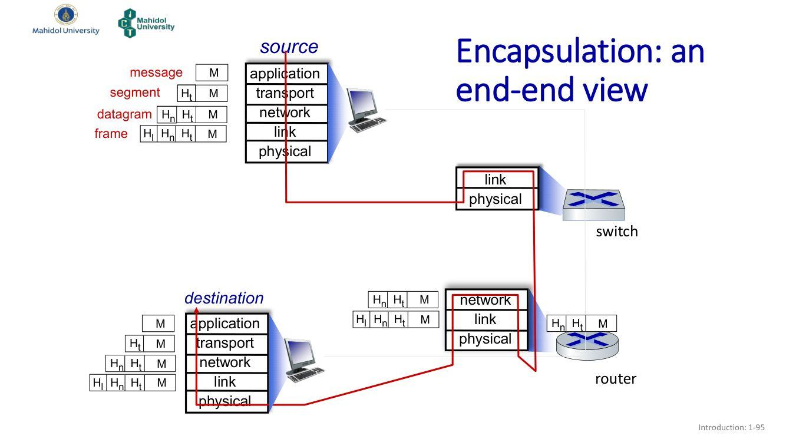
- Switch (layer 2) ทำงานถึงแค่ link + physical → ดูแค่ Hl
- Router (layer 3) ทำงานถึง network → แกะถึง Hn เพื่อดู IP ปลายทาง แล้วห่อ Hl ใหม่ส่งต่อ
- มีแค่ host ปลายทาง ที่แกะถึง application
สไลด์ไทย — Encapsulation สรุป:
- Application: สร้างข้อมูล (Message)
- Transport: ใส่หมายเลข port ต้นทาง/ปลายทาง (Segment)
- Network: แปะที่อยู่ IP address เหมือนจ่าหน้าซองจดหมาย (Datagram)
- Link: บรรจุลงกรอบเพื่อส่งผ่านสายสัญญาณเฉพาะหน้า (Frame)
การเดินทางของแพ็กเก็ต (Journey of a Packet): จุดสำคัญคือ อุปกรณ์กลางทาง (routers) อ่านข้อมูลแค่ถึง Network (IP) เพื่อตัดสินใจเส้นทาง โดย ไม่แตะเนื้อหาของแอป
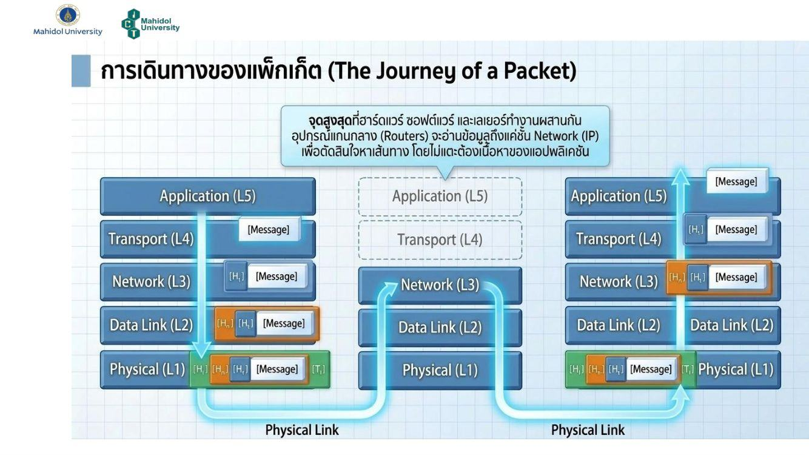
เลเยอร์ระดับล่าง: Node-to-Node — มือถือ → (WiFi) → router บ้าน → (Fiber optic) → ISP core switch
- เทคโนโลยีและโปรโตคอล Link layer เปลี่ยนไปตามสภาพแวดล้อมทางกายภาพในแต่ละช่วง ของการเดินทาง
- ฮาร์ดแวร์ Physical แปลงเฟรมเป็นสัญญาณแสง คลื่นวิทยุ หรือกระแสไฟฟ้า เพื่อข้ามสื่อกลาง
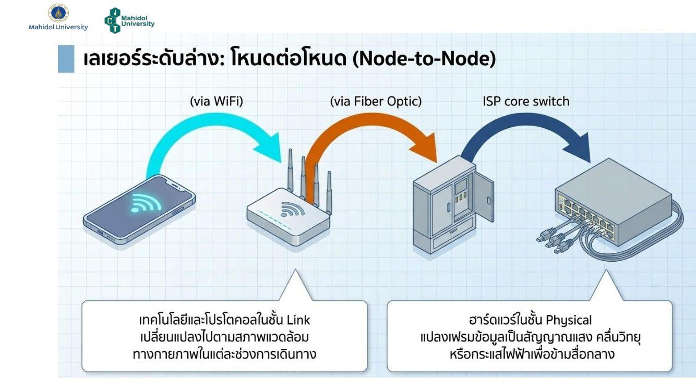
7.4 ISO/OSI Reference Model (7 layers) ⭐
7 layers (บนลงล่าง): Application, Presentation, Session, Transport, Network, Data Link, Physical (ตัวหนา = ไม่มีใน Internet stack)
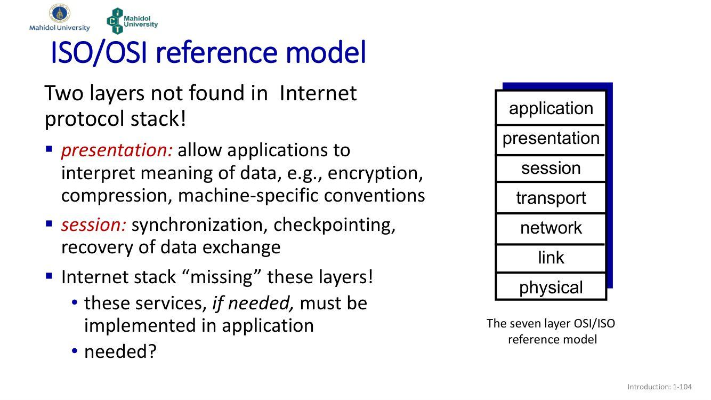
2 layer ที่ไม่มีใน Internet stack:| Layer | หน้าที่ |
|---|---|
| Presentation | ให้แอปตีความ ความหมายของข้อมูล ได้ เช่น encryption, compression, ข้อตกลงเฉพาะเครื่อง |
| Session | synchronization, checkpointing, recovery ของการแลกข้อมูล |
- Internet stack "ขาด" 2 layer นี้ → ถ้าต้องการบริการเหล่านี้ ต้องทำเองใน application
- จำเป็นไหม? (คำถามชวนคิดในสไลด์)
💡 ท่องจำ OSI จากล่างขึ้นบน: "Pizza Delivery Never Takes Sweet Pepperoni Away" → Physical, Data link, Network, Transport, Session, Presentation, Application
สไลด์ภาพ OSI (thenetworkdna): ตัวอย่างต่อ layer — L7 HTTP/FTP/SMTP/DNS, L6 SSL/TLS, JPEG, L5 NetBIOS/RPC, L4 TCP/UDP, L3 IP/ICMP, L2 Ethernet/MAC/PPP, L1 สาย/ฮับ/สัญญาณ; ข้อมูลไหลจาก L7 ลงไป L1 ฝั่งส่ง แล้ว L1 ขึ้น L7 ฝั่งรับ
7.5 Logical vs Physical Network Diagram
| Logical diagram | Physical diagram | |
|---|---|---|
| แสดงอะไร | ข้อมูลไหลอย่างไร (how data flows) — เน้นหน้าที่และการไหลของข้อมูลระหว่างส่วนประกอบ | หน้าตาจริง (what it looks like) — ฮาร์ดแวร์จริงและการต่อสายจริง |
| ตัวอย่าง | Internet → Router → Firewall → Switch → Users/Devices/Servers (ไอคอน) | อุปกรณ์ router/firewall/switch ของจริง |
ในเครือข่ายสมัยใหม่ใช้ ทั้งสองแบบ
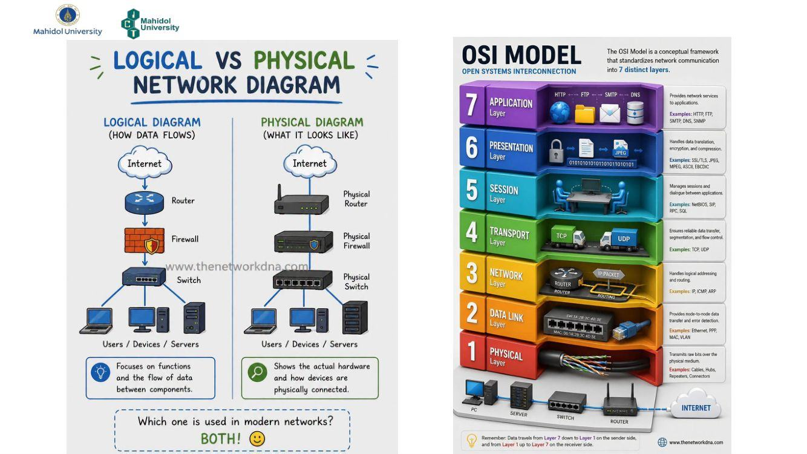
8. ประวัติอินเทอร์เน็ต (Internet History)
1961–1972: หลักการ packet switching ยุคแรก
| ปี | เหตุการณ์ |
|---|---|
| 1961 | Kleinrock — ทฤษฎีคิว (queueing theory) แสดงว่า packet switching มีประสิทธิภาพ |
| 1964 | Baran — packet switching ในเครือข่ายทหาร |
| 1967 | ARPAnet ถูกคิดขึ้นโดย Advanced Research Projects Agency |
| 1969 | ARPAnet node แรกเริ่มใช้งาน |
| 1972 | ARPAnet สาธิตต่อสาธารณะ, NCP (Network Control Protocol) = host-host protocol แรก, โปรแกรม e-mail แรก, ARPAnet มี 15 nodes |
1972–1980: Internetworking, เครือข่ายใหม่และแบบ proprietary
| ปี | เหตุการณ์ |
|---|---|
| 1970 | ALOHAnet เครือข่ายดาวเทียมในฮาวาย |
| 1974 | Cerf and Kahn — สถาปัตยกรรมเชื่อมต่อเครือข่ายเข้าด้วยกัน |
| 1976 | Ethernet ที่ Xerox PARC |
| ปลาย 70s | สถาปัตยกรรม proprietary: DECnet, SNA, XNA |
| 1979 | ARPAnet มี 200 nodes |
หลักการ internetworking ของ Cerf & Kahn (กำหนดสถาปัตยกรรมอินเทอร์เน็ตทุกวันนี้):
- minimalism, autonomy — ไม่ต้องเปลี่ยนภายในเครือข่ายเพื่อเชื่อมกัน
- best-effort service model — พยายามส่งให้ดีที่สุด ไม่รับประกัน
- stateless routing — router ไม่จำสถานะการเชื่อมต่อ
- decentralized control — ไม่มีศูนย์ควบคุมกลาง
1980–1990: โปรโตคอลใหม่ เครือข่ายเพิ่มขึ้นมาก
| ปี | เหตุการณ์ |
|---|---|
| 1982 | กำหนด SMTP (e-mail) |
| 1983 | ใช้งาน TCP/IP, กำหนด DNS (แปลงชื่อ → IP) |
| 1985 | กำหนด FTP |
| 1988 | TCP congestion control |
| — | เครือข่ายระดับชาติใหม่: CSnet, BITnet, NSFnet, Minitel; host 100,000 เครื่อง |
1990s–2000s: การค้า, Web, แอปใหม่
- ต้นยุค 90: ARPAnet ปลดระวาง
- 1991: NSF ยกเลิกข้อจำกัดการใช้ NSFnet เชิงพาณิชย์ (NSFnet ปลดระวางปี 1995)
- ต้นยุค 90: Web — hypertext [Bush 1945, Nelson 1960s], HTML, HTTP: Berners-Lee, 1994: Mosaic ต่อมาเป็น Netscape, ปลาย 90s: Web เชิงพาณิชย์
- ปลาย 90s–2000s: killer apps ใหม่ (instant messaging, P2P file sharing), network security ขึ้นมาสำคัญ, ~50 ล้าน host, 100 ล้าน+ ผู้ใช้, backbone วิ่งที่ Gbps
2005–ปัจจุบัน: scale, SDN, mobility, cloud
- broadband ตามบ้านขยายตัว (10–100s Mbps)
- 2008: SDN (software-defined networking)
- wireless ความเร็วสูงแพร่หลาย: 4G/5G, WiFi
- ผู้ให้บริการ (Google, FB, Microsoft) สร้างเครือข่ายตัวเอง bypass อินเทอร์เน็ตเชิงพาณิชย์ เพื่ออยู่ใกล้ผู้ใช้
- องค์กรรันบริการบน cloud (AWS, Microsoft Azure)
- smartphone: อุปกรณ์ mobile มากกว่า fixed บนอินเทอร์เน็ต (2017)
- ~15B อุปกรณ์ ต่ออินเทอร์เน็ต (2023, statista.com)
9. สไลด์เสริม (ภาพสรุปภาษาไทย)
9.1 การจำแนกเครือข่ายตามขนาด (Network Scale Matrix)
| ประเภท | ระยะ | ตัวอย่าง |
|---|---|---|
| PAN (Personal Area Network) | 1 m – 10 m | Bluetooth — ระดับตัวบุคคล/ห้อง |
| LAN (Local Area Network) | 10 m – 1 km | Wi-Fi — ระดับอาคาร/วิทยาเขต |
| MAN (Metropolitan Area Network) | ~10 km | WiMAX — ระดับเมือง |
| WAN (Wide Area Network) | 100 km – ทั้งโลก | Internet — ระดับประเทศ/โลก |
ยิ่งระยะไกลขึ้น เทคโนโลยีการเชื่อมต่อและโปรโตคอลก็ต่างกันออกไป
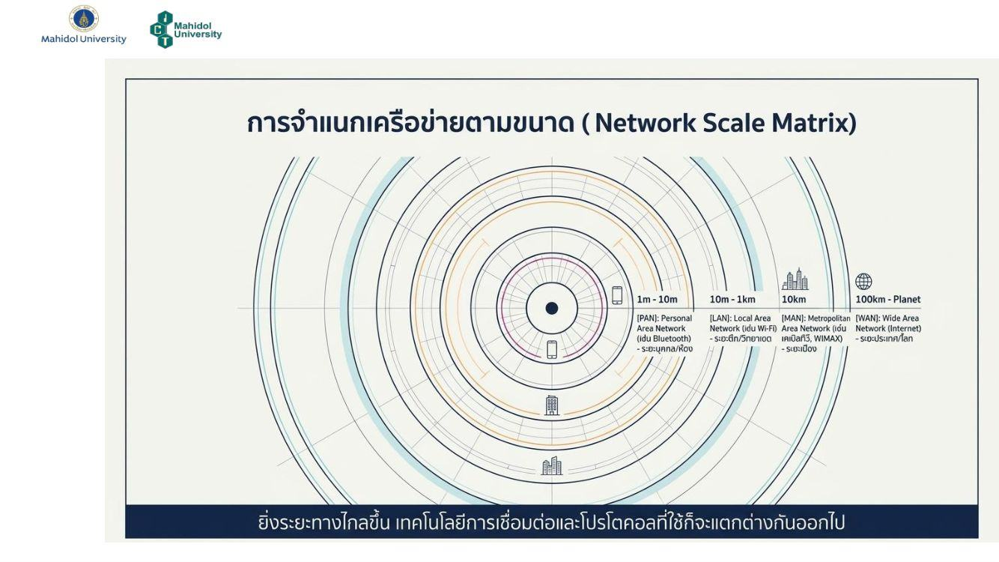
9.2 การเชื่อมต่อที่ขอบเครือข่าย (Accessing the Edge)
| Wired Access: IEEE 802.3 (Ethernet) | Wireless Access: IEEE 802.11 (Wi-Fi) |
|---|---|
| เชื่อมผ่านสายสัญญาณ | เชื่อมผ่านคลื่นวิทยุ |
| เน้นความเร็วสูงสุดและเสถียร | เน้นความยืดหยุ่นและการเคลื่อนที่ (mobility) |
| เหมาะกับคอมตั้งโต๊ะและเซิร์ฟเวอร์ | เหมาะกับอุปกรณ์พกพา |
ทั้งสองแบบต่อเข้า Edge Router และ LAN ทั้งสองประเภทต้องใช้เทคโนโลยี MAC (Medium Access Control) ที่ต่างกันเพื่อจัดการการส่งข้อมูล
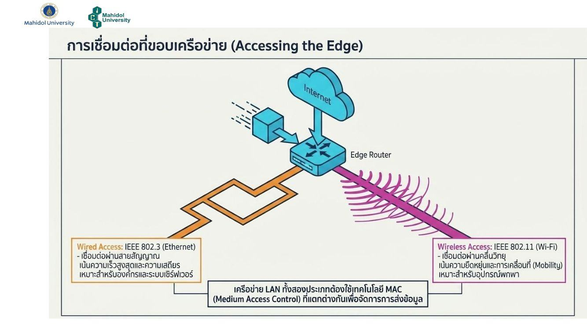
9.3 วิวัฒนาการของ Ethernet (จากสายส่งร่วม สู่ช่องทางส่วนตัว)
- ยุคเริ่มต้น (Classic Ethernet) — ใช้สาย Coaxial ร่วมกัน หากส่งพร้อมกันจะเกิด การชนกัน (collisions)
- ยุคกลาง (Hubs) — เปลี่ยนมาใช้สาย Twisted Pair รวมศูนย์ที่ Hub แต่ ยังแชร์แบนด์วิดท์และเกิดการชนกันได้
- ยุคปัจจุบัน (Switches) — Switch เป็นกลาง แต่ละพอร์ตมี ช่องทางเฉพาะ (dedicated lanes) ขจัดปัญหาการชนกันอย่างสมบูรณ์
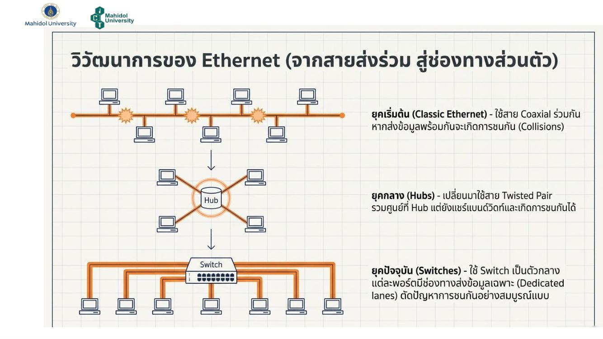
โครงสร้าง Switched Ethernet:
- Independent Collision Domains: แต่ละพอร์ตทำงานแยกกันโดยสิ้นเชิง ส่งข้อมูลแบบขนานได้พร้อมกัน
- Full-Duplex: ส่งและรับข้อมูลได้ในเวลาเดียวกัน
- High-Speed Backplane: แผงวงจรหลักประมวลผลและส่งต่อแพ็กเก็ต (store-and-forward) ไปยังปลายทางที่ถูกต้องด้วยความเร็วระดับ Gbps
- ความง่าย (plug-and-play), ราคาถูก, ประสิทธิภาพสูง → Ethernet เป็นมาตรฐานเครือข่ายใช้สายที่ไม่มีใครโค่นได้
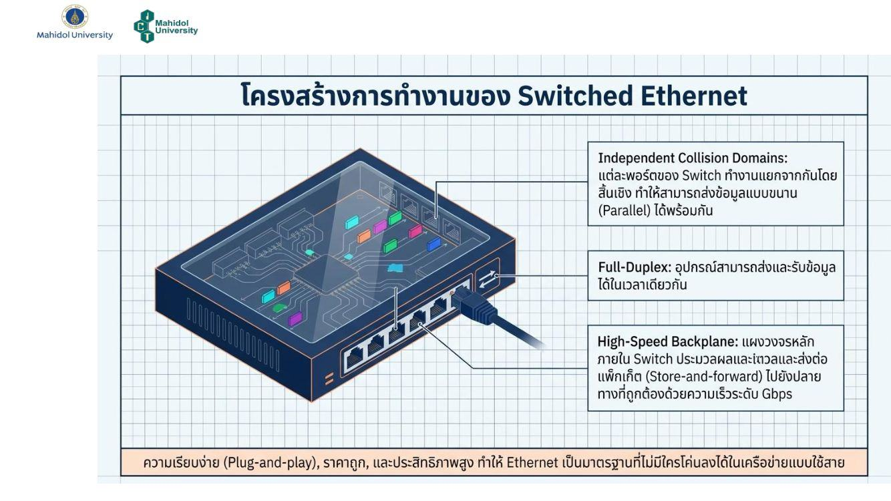
9.4 Wireless LANs (IEEE 802.11)
- ทลายข้อจำกัดทางกายภาพ: ออกแบบเพื่อ mobility ของผู้ใช้ที่ต้องต่ออินเทอร์เน็ตจากทุกที่
- คลื่นวิทยุแทนสายเคเบิล: ส่งข้อมูลผ่านอากาศด้วยย่านความถี่เฉพาะ แต่เจอ สัญญาณรบกวน สิ่งกีดขวาง และระยะทาง
- IEEE 802.11 เป็นมาตรฐานหลักทั่วโลก ตั้งแต่บ้าน สำนักงาน ถึงเครื่องบิน
สถาปัตยกรรม 802.11 (Basic Service Set, BSS):
- Access Point (AP): เป็นสถานีฐาน (base station) เชื่อมต่อระหว่างเครือข่ายไร้สายกับเครือข่ายใช้สาย
- Wireless Hosts: สมาร์ทโฟน แล็ปท็อปที่อยู่ในรัศมีสัญญาณ
- Infrastructure Mode: โหมดหลักที่การสื่อสารต้องวิ่งผ่าน AP เป็นศูนย์กลาง
- Association: อุปกรณ์ไร้สายต้องลงทะเบียน (associate) กับ AP ก่อน จึงส่งข้อมูลออกอินเทอร์เน็ตได้
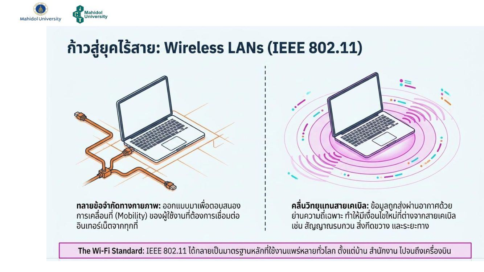
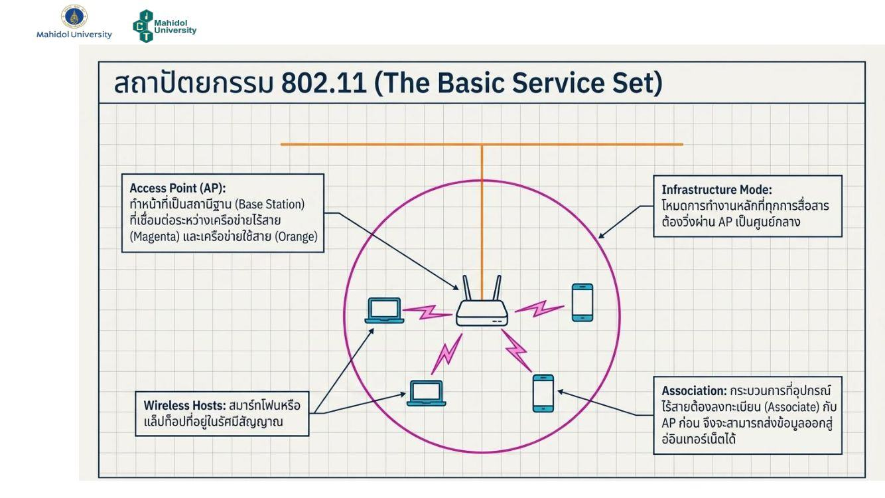
ปัญหา Hidden Terminal:
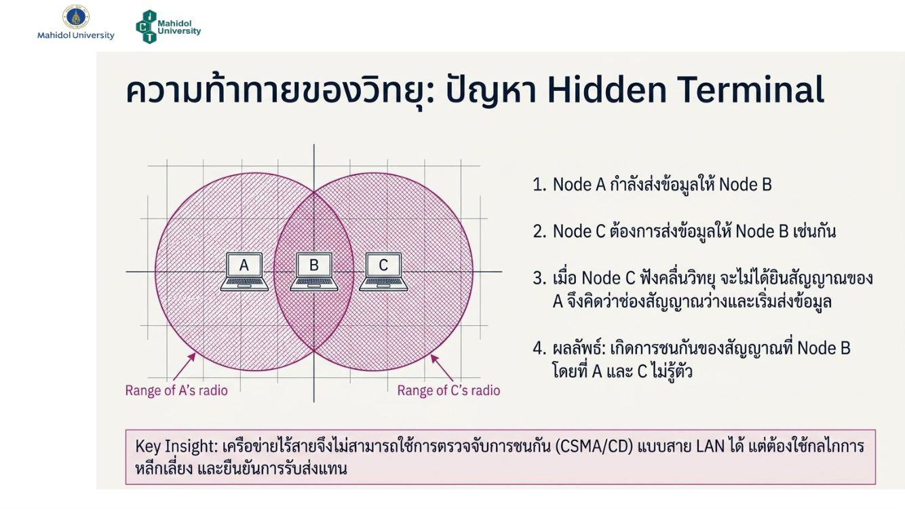
- Node A กำลังส่งข้อมูลให้ B
- Node C ต้องการส่งให้ B เช่นกัน
- C ฟังคลื่นแล้ว ไม่ได้ยินสัญญาณของ A (อยู่นอกระยะ) จึงคิดว่าช่องว่างและเริ่มส่ง
- ผล: ชนกันที่ B โดยที่ A และ C ไม่รู้ตัว
Key insight: เครือข่ายไร้สาย ใช้การตรวจจับการชน (CSMA/CD) แบบ LAN มีสายไม่ได้ ต้องใช้กลไก หลีกเลี่ยง (avoidance) และยืนยันการรับส่งแทน
สรุปเปรียบเทียบ Link-layer:
| Ethernet (Wired) | Wi-Fi (Wireless) | |
|---|---|---|
| สื่อกลาง | สายทองแดง (twisted pair) / fiber optic | คลื่นวิทยุ |
| การจัดการช่องสัญญาณ | Switched (แยกช่องทางเด็ดขาด ไม่มี collisions) | Shared medium (แชร์ช่องสัญญาณ เสี่ยง hidden terminal) |
| การเคลื่อนที่ | อุปกรณ์อยู่กับที่ (fixed) | เคลื่อนที่ได้ และ roaming ข้าม AP ได้ |
| ความปลอดภัยเบื้องต้น | อาศัยความปลอดภัยทางกายภาพ (ต้องเสียบสาย) | สัญญาณกระจายในอากาศ ต้องใช้โปรโตคอลเข้ารหัส (WEP/WPA) เสมอ |
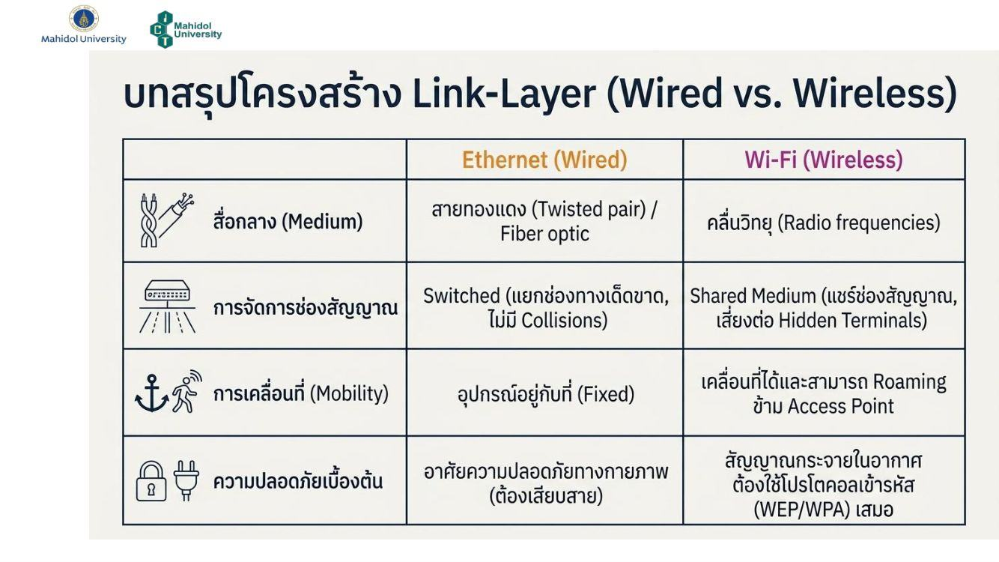
9.5 เส้นทางข้อมูลในโลกยุคใหม่ (The Packet Journey)
- The Wireless Edge: อุปกรณ์พกพาส่งข้อมูลผ่านคลื่นวิทยุ 802.11 เข้าสู่ AP
- The Wired LAN: AP แปลงสัญญาณเข้าสู่ Switched Ethernet ผ่านสายความเร็วสูง โดยไม่เกิดการชนกันของข้อมูล
- The Gateway: Router ตรวจสอบเส้นทาง (routing) และส่งข้อมูลออกสู่โลกภายนอก
- The Internet Core: ข้อมูลเดินทางเข้าสู่เครือข่ายของ ISPs แบบ store-and-forward สู่ปลายทางทั่วโลก
9.6 รากฐานของระบบเครือข่าย (Architectural Pillars)
| The Internet (Macro) | Ethernet (Physical Edge) | Wireless LAN (Invisible Edge) |
|---|---|---|
| เครือข่ายของเครือข่าย ขับเคลื่อนด้วยโปรโตคอลสากล (TCP/IP) และสถาปัตยกรรม packet switching ที่เชื่อมคนทั้งโลก | มาตรฐานทองคำของ LAN วิวัฒนาการสู่ Switch เพื่อความเร็วและเสถียรภาพระดับกิกะบิต | นวัตกรรม 802.11 ที่ปลดล็อกข้อจำกัดทางกายภาพ นำมาซึ่งความท้าทายทางวิศวกรรมเพื่อการเชื่อมต่อไร้รอยต่อ |
9.7 Customer-Visible Properties vs Engineering Knobs
| สิ่งที่ลูกค้ามองเห็น (Customer-Visible Properties) | ปุ่มปรับทางวิศวกรรม (Tunable Engineering Knobs) |
|---|---|
| Delivery (ส่งถึงไหม) | Network Topology |
| Correctness (ถูกต้องไหม) | Communication Protocols |
| Fault Tolerance (ทนความผิดพลาด) | Network Architecture |
| Timeliness (ทันเวลา) | Components |
| Cost (ต้นทุน) | Physical Medium |
→ วิศวกรปรับ "knobs" ด้านล่าง เพื่อให้ได้คุณสมบัติที่ลูกค้าต้องการด้านบน
9.8 Wireshark
- packet capture (pcap) เก็บ สำเนา ของทุก Ethernet frame ที่ส่ง/รับ
- packet analyzer แสดงเนื้อหาแยกตาม layer ให้เราดู
10. คำศัพท์สำคัญ
| คำศัพท์ | ความหมาย | จำง่าย ๆ ว่า |
|---|---|---|
| Host / End system | อุปกรณ์ปลายทางที่รันแอป | อยู่ที่ "ขอบ" |
| Packet switch | router, switch ส่งต่อแพ็กเก็ต | พนักงานคัดแยกพัสดุ |
| Bandwidth / Transmission rate (R) | อัตราส่งบิตของลิงก์ (bps) | ความกว้างของท่อ |
| Protocol | กฎ format, order, action ของข้อความ | มารยาทการคุย |
| RFC / IETF | เอกสารมาตรฐาน / องค์กรออกมาตรฐาน | |
| Access network | เครือข่ายที่ต่อ host เข้า edge router | ซอยหน้าบ้าน |
| HFC | Hybrid Fiber Coax (cable internet) | shared, asymmetric |
| DSL / DSLAM | อินเทอร์เน็ตผ่านสายโทรศัพท์ / อุปกรณ์รวมสายที่ชุมสาย | dedicated |
| CMTS | cable modem termination system ที่ headend | |
| FDM | แบ่งช่องตามความถี่ | แบ่งเลน |
| TDM | แบ่งช่องตามเวลา | ผลัดกันใช้ |
| Guided / Unguided media | สื่อมีสาย / ไร้สาย | |
| Forwarding | ย้ายแพ็กเก็ต input → output (local) | เลี้ยวที่แยก |
| Routing | หาเส้นทางทั้งหมด (global) | วางแผนทริป |
| Store-and-forward | รับครบทั้งแพ็กเก็ตก่อนส่งต่อ | |
| Packet switching | แบ่งแพ็กเก็ต แชร์ทรัพยากร on-demand | ทางด่วนแชร์กัน |
| Circuit switching | จองทรัพยากรตลอดสาย | จองโต๊ะร้านอาหาร |
| Bursty | ข้อมูลมาเป็นช่วง ๆ | |
| ISP / Tier-1 ISP | ผู้ให้บริการอินเทอร์เน็ต / ระดับบนสุด ครอบคลุมโลก | ทางหลวง |
| IXP | จุดที่หลาย ISP มาเชื่อมกัน | ทางแยกต่างระดับ |
| Peering | แลก traffic กันตรง ๆ ไม่จ่ายเงิน | |
| POP | จุดที่ลูกค้าต่อเข้าเครือข่าย ISP | |
| Content provider network | เครือข่ายส่วนตัวของ Google ฯลฯ | ทางด่วนส่วนตัว |
| d_proc / d_queue / d_trans / d_prop | processing / queueing / L/R / d/s | 4 ตัวรวมเป็น d_nodal |
| Traffic intensity | La/R | > 1 = delay อนันต์ |
| traceroute | วัด delay ไปแต่ละ router ด้วย TTL | 3 probes/hop |
| Throughput | อัตราบิตถึงผู้รับ | = min ของลิงก์ |
| Bottleneck link | ลิงก์ที่จำกัด throughput | คอขวด |
| Packet sniffing | ดักอ่านแพ็กเก็ต (promiscuous mode) | Wireshark |
| IP spoofing | ปลอม source IP | |
| DoS / DDoS | ถล่มจนใช้งานไม่ได้ / จากหลายเครื่อง (botnet) | |
| Firewall | middlebox กรองแพ็กเก็ต off-by-default | ยาม |
| Layering | แบ่งระบบเป็นชั้น แต่ละชั้นใช้บริการชั้นล่าง | ระบบสนามบิน |
| Encapsulation / Decapsulation | เติม / แกะ header ทีละชั้น | ตุ๊กตาแม่ลูกดก |
| Message / Segment / Datagram / Frame | หน่วยข้อมูลของ App / Transport / Network / Link | M-S-D-F |
| Presentation / Session layer | encryption, compression / sync, checkpoint, recovery | มีใน OSI ไม่มีใน TCP/IP |
| PAN / LAN / MAN / WAN | ขนาดเครือข่ายตามระยะ | ตัว → ตึก → เมือง → โลก |
| BSS / AP / Association | ชุดบริการ 802.11 / จุดกระจายสัญญาณ / ลงทะเบียนกับ AP | |
| Hidden terminal | สองโหนดไม่ได้ยินกันแต่ส่งหาโหนดกลางพร้อมกัน → ชน | ทำให้ใช้ CSMA/CD ไม่ได้ |
| SDN | Software-defined networking (2008) |
11. สรุปท้ายบท / จุดที่มักออกสอบ
- Internet = network of networks มอง 2 มุม: nuts & bolts (hosts, packet switches, links, networks) และ services (โครงสร้างพื้นฐาน + programming interface)
- Protocol = format + order + actions
- Edge vs Core: edge = hosts (client/server) + access network; core = mesh ของ routers
- Cable (HFC) = shared, asymmetric, ใช้ FDM vs DSL = dedicated, ใช้สายโทรศัพท์ → DSLAM
- Fiber: เร็ว error ต่ำ ไม่โดน EM noise / Coax: 2 ตัวนำร่วมศูนย์กลาง broadband / TP: Cat5 = 1 Gbps, Cat6 = 10 Gbps / Satellite geostationary: delay 270 ms
- Forwarding (local, ใช้ forwarding table) vs Routing (global, ใช้ routing algorithm)
- Store-and-forward: ต้องรับครบแพ็กเก็ตก่อน, d = L/R (ตัวอย่าง 10 Kb / 100 Mbps = 0.1 ms) — ถ้าผ่าน N ลิงก์ เวลาส่งรวม ≈ N·L/R
- Packet vs Circuit switching: ตัวอย่าง 1 Gbps, 100 Mbps, active 10% → circuit 10 users, packet 35 users (P > 10 active < 0.0004); packet ดีกับ bursty แต่เสี่ยง congestion
- FDM (แบ่งความถี่) vs TDM (แบ่งเวลา)
- โครงสร้าง ISP: ต่อตรงทุกตัว O(N²) ไม่ scale → global ISP → คู่แข่ง + IXP/peering → regional ISP → content provider network; Tier-1 เชื่อมกัน settlement-free
- 4 delays: d_nodal = d_proc + d_queue + d_trans + d_prop
- ⚠️ d_trans = L/R (ขนาด/bandwidth) ≠ d_prop = d/s (ระยะทาง/ความเร็วสัญญาณ ~2×10⁸ m/s)
- Caravan: 12s × 10 คัน + 100 km ที่ 100 km/h = 62 นาที; กรณี 1 นาที/คัน + 1000 km/h → คันแรกถึงด่าน 2 นาทีที่ 7 เหลือ 3 คัน
- Traffic intensity La/R: ≈0 น้อย, →1 มาก, >1 อนันต์
- traceroute: 3 probes ต่อ router, ใช้ TTL = i,
*= ไม่ตอบ, delay กระโดด = ลิงก์ข้ามมหาสมุทร, delay "ลดลง" ได้เพราะ queueing ต่างกันในแต่ละ probe - Loss: buffer เต็ม → drop; อาจส่งใหม่โดย node ก่อนหน้า / source / ไม่ส่งเลย
- Throughput = min(Rs, Rc); มีการแชร์ backbone: min(Rc, Rs, R/10); ปกติ access link เป็นคอขวด
- Security: sniffing (promiscuous, broadcast media), IP spoofing (ปลอม src), DoS vs DDoS (botnet); ป้องกันด้วย authentication, encryption, digital signature, VPN, firewall
- TCP/IP 5 layers + ตัวอย่างโปรโตคอล + หน่วยข้อมูล (message, segment, datagram, frame)
- Encapsulation: Ht → Hn → Hl; switch ดูถึง L2, router ดูถึง L3
- OSI 7 layers: Presentation + Session ไม่มี ใน Internet stack → ต้องทำใน application
- ข้อดี layering: โครงสร้างชัด + modular (เปลี่ยนชั้นหนึ่งไม่กระทบชั้นอื่น)
- ประวัติสำคัญ: 1961 Kleinrock, 1969 ARPAnet node แรก, 1972 NCP + e-mail, 1974 Cerf & Kahn, 1976 Ethernet, 1983 TCP/IP + DNS, 1982 SMTP, 1985 FTP, 1988 TCP congestion control, 1990s Web (Berners-Lee), 2008 SDN, 2017 mobile > fixed
- หลักการ Cerf & Kahn: minimalism/autonomy, best-effort, stateless routing, decentralized control
- สไลด์เสริม: PAN/LAN/MAN/WAN, Ethernet วิวัฒนาการ coax → hub → switch, hidden terminal ทำให้ Wi-Fi ใช้ CSMA/CD ไม่ได้